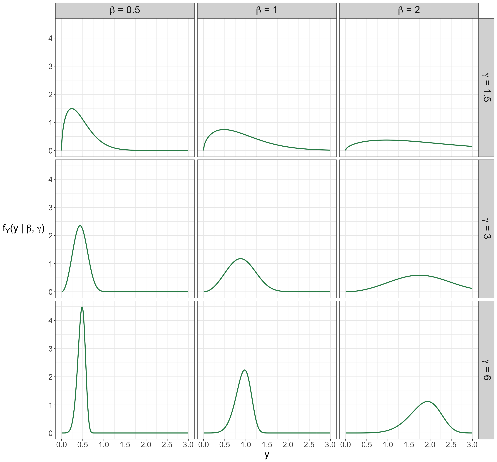
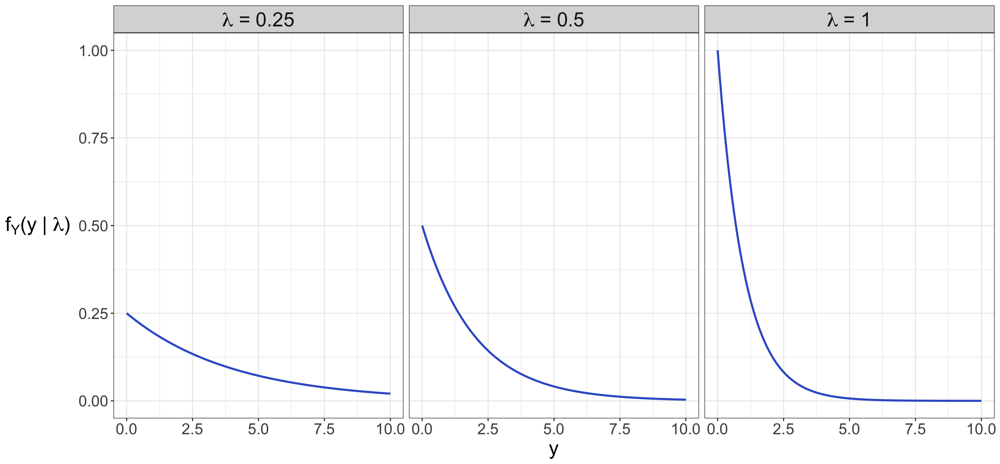
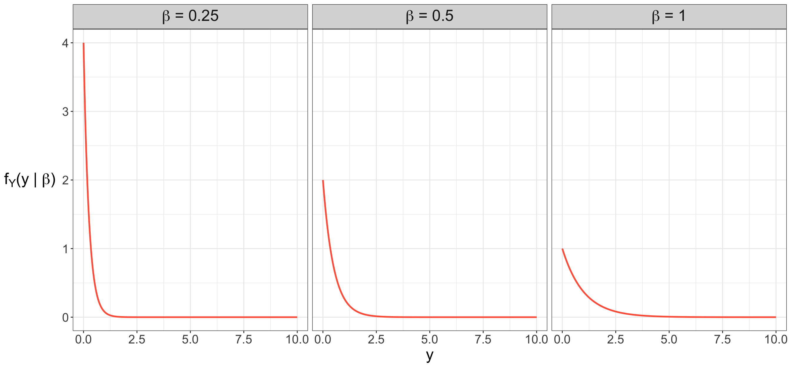
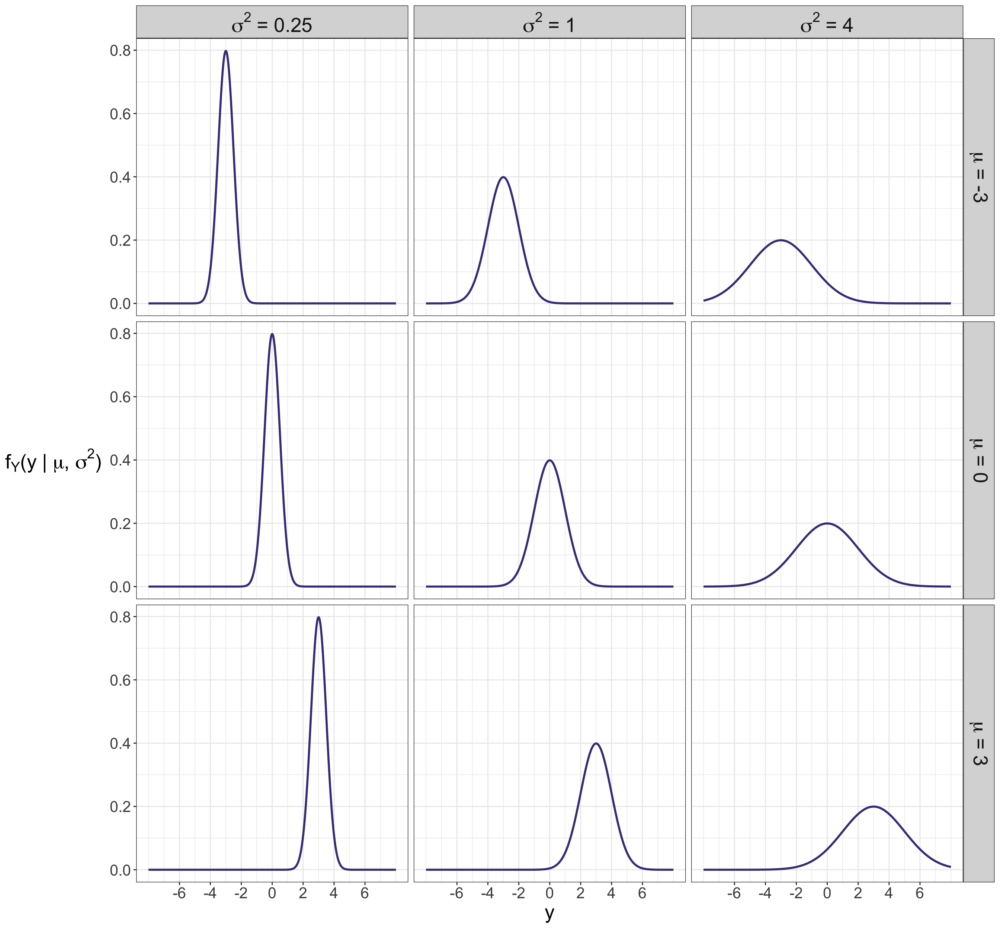

mindmap
root((Univariate
Random
Variable Y))
Continuous
{{Unbounded}}
)Normal(
)Logistic(
{{Nonnegative Y}}
)Lognormal(
)Exponential(
)Gamma(
)Weibull(
{{Y is between <br/>0 and 1}}
)Beta(
Discrete
Binary
{{Y is a success or <br/>failure}}
)Bernoulli(
Count
{{Y succeses in <br/>n trials}}
)Binomial(
{{Y failures <br/>before experiencing <br/>k successes}}
)Negative Binomial(
{{Y events in <br/>a fixed interval <br/>of time or space}}
)Classical <br/>Poisson(
)Generalized <br/>Poisson(
)Zero Inflated <br/>Poisson(
Categorical
{{Y successes of a given category, <br/>among a set of k categories, <br/>in n trials}}
)Multinomial(
Appendix C — Distributional Mind Map
A crucial part of the practice of regression analysis is a fair knowledge of all the different probability distributions that would allow us to identify the most suitable regression model. Let us delve into the distributional toolbox to be used in this book.
Figure C.1 shows all those probability distributions depicted as clouds, in the form of a univariate random variable \(Y\), used to model our outcomes of interest in the regression tools explored in each of the thirteen regression chapters, i.e., we take a generative modelling approach. Note this mind map splits the outcomes of interest into two large zones: discrete and continuous. Furthermore, this mind map briefly describes a given random variable \(Y\) as a quick cheat sheet regarding its support (e.g., nonnegative, bounded or unbounded) or distributional definition (e.g., success or failure, successes in \(n\) trials, etc.).
Since a given random variable (e.g., the outcome \(Y\) in any of the thirteen regression models in this book) will have a probability distribution associated with it, which will define the probability arrangement of each possible value or category \(Y\) could take on, we also need a way to summarize all this information via key estimated metrics called measures of central tendency and uncertainty:
- Measure of central tendency: This metric refers to a central or typical value that a given random variable might take when we observe various realizations of this variable over a long period.
- Measure of uncertainty: This metric pertains to the spread of a random variable when we observe its different realizations in the long term. As a side note, a larger spread indicates more variability in these realizations. On the other hand, a smaller spread denotes less variability in these realizations.

These metrics allow us to clearly communicate how the outcome \(Y\) behaves in our case study, and this is heavily related to the storytelling stage from the data science workflow, as explained in Section 1.2.8. More specifically, the measures of central tendency can be communicated along with our estimated regression parameters, given that these metrics are usually conditioned to our regressors of interest within our modelling framework.
Heads-up on parameter estimation!
Just as in the case of regression parameters, the measures of central tendency and uncertainty are also parameters (more specifically, belonging to a given probability distribution) that can be estimated via an observed random sample through methods such as maximum likelihood estimation (MLE). You can check further details on the MLE fundamentals in Section 2.2.
There are different measures of central tendency and uncertainty. Nevertheless, we will only focus on the expected value and the variance. Now, suppose \(Y\) is a random variable whose support is \(\mathcal{Y}\). Furthermore, let \(g(Y)\) be a general function of \(Y\).
By the law of the unconscious statistician (LOTUS), when \(Y\) is a discrete random variable, we have that:
\[ \mathbb{E} \left[ g(Y) \right] = \displaystyle \sum_{y \in \mathcal{Y}} g(Y) \cdot P_Y(Y = y), \tag{C.1}\]
where \(P_Y(Y = y)\) is the probability mass function (PMF) of \(Y\).
If \(Y\) is a continuous random variable, by the LOTUS, the mean of function \(g(Y)\) is defined as
\[ \mathbb{E} \left[ g(Y) \right] = \displaystyle \int_{\mathcal{Y}} g(Y) \cdot f_Y(y) \text{d}y, \tag{C.2}\]
where \(f_Y(y)\) is the probability density function (PDF) of \(Y\).
Note that when \(g(Y) = y\) in the discrete case, Equation C.1 becomes
\[ \mathbb{E} \left( Y \right) = \displaystyle \sum_{y \in \mathcal{Y}} y \cdot P_Y(Y = y). \tag{C.3}\]
On the other hand, when \(g(Y) = y\) in the continuous case, Equation C.2 becomes
\[ \mathbb{E} \left( Y \right) = \displaystyle \int_{\mathcal{Y}} y \cdot f_Y(y) \mathrm{d}y. \tag{C.4}\]
Either for a discrete or continuous case, the variance is defined as
\[ \text{Var}(Y) = \mathbb{E}\{[Y - \mathbb{E}(Y)]^2\}. \]
After applying some algebraic rearrangements and expected value properties, the expression above is equivalent to:
\[ \text{Var}(Y) = \mathbb{E} \left( Y^2 \right) - [\mathbb{E}(Y)]^2. \tag{C.5}\]
where \(\mathbb{E} \left( Y^2 \right)\) can be computed either via Equation C.1 or Equation C.2 depending on the nature of \(Y\) with \(g(Y) = y^2\).
Now, for each case depicted as a cloud in Figure C.1, subsequent sections in this appendix will show elaborate on why each corresponding PMF or PDF (depending on the type of random variable, \(Y\)) is a proper probability distribution (i.e., all the standalone probabilities over the support of \(Y\) add up to one) along with the respective proofs of their corresponding means and variances.
D Discrete Random Variables
Let us recall what a discrete random variable is. This type of variable is defined to take on a set of countable possible values. In other words, these values belong to a finite set. Figure C.1 delves into the following specific probability distributions:
- Bernoulli. A random variable \(Y\) that can take on the values of \(0\) (i.e., a failure) or \(1\) (i.e., a success) where the distributional parameter is the probability of success \(\pi \in [0, 1]\). Note \(Y\) is said to be binary with a support of \(y \in \{ 0, 1 \}\).
- Binomial. A random variable \(Y\) that defines the number of independent Bernoulli trials in which we observe a success out of \(n\) trials. Its distributional parameters are the probability of success \(\pi \in [0, 1]\)of each Bernoulli trial along with the total number of trials \(n \in \mathbb{N}\). Note \(Y\) is said to be of count type with a support of \(y \in \{ 0, 1, \dots, n \}\) successes.
- Negative Binomial. A random variable \(Y\) that defines the number of independent Bernoulli trials in which we observe a failure before experiencing \(k\) successes. Its distributional parameters are the probability of success \(\pi \in [0, 1]\) of each Bernoulli trial along with the number of \(k \in \{ 0, 1, 2 \dots\}\) successes. Note \(Y\) is said to be of count type with a support of \(y \in \{ 0, 1, 2 \dots\}\) failures.
- Classical Poisson. A random variable \(Y\) that defines the number of events occurring in a predetermined interval of time or space. Its distributional parameter is the average rate \(\lambda \in (0, \infty)\) of events per this predetermined interval of time or space. Note \(Y\) is said to be of count type with a support of \(y \in \{ 0, 1, 2, \dots \}\) events.
- Generalized Poisson. As in the above classical Poisson case, it is random variable \(Y\) that defines the number of events occurring in a predetermined interval of time or space. It has two distributional parameters: the average rate \(\lambda \in (0, \infty)\) of events per this predetermined interval of time or space, and a dispersion parameter \(\theta \in (-1, 1)\) that models the random variable’s degree of underdispersion (when \(-1 < \theta < 0\)) and overdispersion (when \(0 < \theta < 1\)). Note \(Y\) is said to be of count type with a support of \(y \in \{ 0, 1, 2, \dots \}\) events.
Table D.1 outlines the parameter(s), support, mean, and variance for each discrete probability distribution utilized to model the target \(Y\) in a specific regression tool explained in this book.
| Distribution and Parametrization |
Support | Mean | Variance |
|---|---|---|---|
|
Bernoulli as in \(Y \sim \text{Bern}(\pi)\) with probability of success \(\pi \in [0, 1]\) |
\[y \in \{ 0, 1 \}\] | \[\pi\] | \[\pi (1 - \pi)\] |
|
Binomial as in \(Y \sim \text{Bin}(n, \pi)\) with number of trials \(n \in \mathbb{N}\) and probability of success \(\pi \in [0, 1]\) |
\[y \in \{ 0, 1, \dots, n \}\] | \[n \pi\] | \[n \pi (1 - \pi)\] |
|
Negative Binomial as in \(Y \sim \text{NegBin}(k, \pi)\) with number of successes \(k \in \{ 0, 1, 2 \dots\}\) and probability of success \(\pi \in [0, 1]\) |
\[y \in \{ 0, 1, 2 \dots\}\] | \[\frac{k (1 - \pi)}{\pi}\] | \[\frac{k (1 - \pi)}{\pi^2}\] |
|
Poisson as in \(Y \sim \text{Pois}(\lambda)\) with continuous average rate \(\lambda \in (0, \infty)\) |
\[y \in \{ 0, 1, 2, \dots\}\] | \[\lambda\] | \[\lambda\] |
|
Genealized Poisson as in \(Y \sim \text{GP}(\lambda, \theta)\) with continuous average rate \(\lambda \in (0, \infty)\) and dispersion parameter \(\theta \in (-1, 1)\) |
\[y \in \{ 0, 1, 2, \dots\}\] | \[\frac{\lambda}{1 - \theta}\] | \[\frac{\lambda}{(1 - \theta)^2}\] |
D.1 Bernoulli
Let \(Y\) be a discrete random variable that is part of a random process or system. \(Y\) can only take on the following values:
\[ y = \begin{cases} 1 \; \; \; \; \text{if there is a success},\\ 0 \; \; \; \; \mbox{otherwise}. \end{cases} \tag{D.1}\]
Note that the support of \(Y\) in Equation D.1 makes it binary with these outcomes: \(1\) for success and \(0\) for failure. Then, \(Y\) is said to have a Bernoulli distribution with parameter \(\pi\):
\[ Y \sim \text{Bern}(\pi). \]
D.1.1 Probability Mass Function
The PMF of \(Y\) is the following:
\[ P_Y \left( Y = y \mid \pi \right) = \pi^y (1 - \pi)^{1 - y} \quad \text{for $y \in \{ 0, 1 \}$.} \tag{D.2}\]
Parameter \(\pi \in [0, 1]\) refers to the probability of success. We can verify Equation D.2 is a proper probability distribution (i.e., all the standalone probabilities over the support of \(Y\) add up to one) given that:
Proof. \[ \begin{align*} \sum_{y = 0}^1 P_Y \left( Y = y \mid \pi \right) &= \sum_{y = 0}^1 \pi^y (1 - \pi)^{1 - y} \\ &= \underbrace{\pi^0}_{1} (1 - \pi) + \pi \underbrace{(1 - \pi)^{0}}_{1} \\ &= (1 - \pi) + \pi \\ &= 1. \qquad \qquad \qquad \qquad \quad \square \end{align*} \]
Indeed, the Bernoulli PMF is a proper probability distribution!
D.1.2 Expected Value
Via Equation C.3, the expected value or mean of a Bernoulli-distributed random variable \(Y\) can be found as follows:
Proof. \[ \begin{align*} \mathbb{E}(Y) &= \sum_{y = 0}^1 y P_Y \left( Y = y \mid \pi \right) \\ &= \sum_{y = 0}^1 y \left[ \pi^y (1 - \pi)^{1 - y} \right] \\ &= \underbrace{(0) \left[ \pi^0 (1 - \pi) \right]}_{0} + (1) \left[ \pi (1 - \pi)^{0} \right] \\ &= 0 + \pi \\ &= \pi. \qquad \qquad \qquad \qquad \qquad \qquad \quad \square \end{align*} \]
D.1.3 Variance
Via Equation C.5 and the Equation C.3 of a discrete expected value, the variance of a Bernoulli-distributed random variable \(Y\) can be found as follows:
Proof. \[ \begin{align*} \text{Var} (Y) &= \mathbb{E} \left( Y^2 \right) - \left[ \mathbb{E}(Y)\right]^2 \\ &= \mathbb{E} \left( Y^2 \right) - \pi^2 \qquad \text{since $\mathbb{E}(Y) = \pi$} \\ &= \sum_{y = 0}^1 y^2 P_Y \left( Y = y \mid \pi \right) - \pi^2 \qquad \text{by LOTUS} \\ &= \left\{ \underbrace{(0^2) \left[ \pi^0 (1 - \pi) \right]}_{0} + \underbrace{(1^2) \left[ \pi (1 - \pi)^{0} \right]}_{\pi} \right\} - \pi^2 \\ &= (0 + \pi) - \pi^2 \\ &= \pi - \pi^2 \\ &= \pi (1 - \pi). \qquad \qquad \qquad \qquad \qquad \qquad \qquad \quad \square \end{align*} \]
D.2 Binomial
Suppose you execute \(n\) independent Bernoulli trials, each one with a probability of success \(\pi\). Let \(Y\) be the number of successes obtained within these \(n\) Bernoulli trials. Then, \(Y\) is said to have a Binomial distribution with parameters \(n\) and \(\pi\):
\[ Y \sim \text{Bin}(n, \pi). \]
D.2.1 Probability Mass Function
The PMF of \(Y\) is the following:
\[ \begin{align*} P_Y \left( Y = y \mid n, \pi \right) &= {n \choose y} \pi^y (1 - \pi)^{n - y} \\ & \qquad \qquad \qquad \text{for $y \in \{ 0, 1, \dots, n \}$.} \end{align*} \tag{D.3}\]
Parameter \(\pi \in [0, 1]\) refers to the probability of success of each Bernoulli trial and \(n \in \mathbb{N}\) to the number of trials. On the other hand, the term \({n \choose y}\) indicates the total number of possible combinations for \(y\) successes out of our \(n\) trials:
\[ {n \choose y} = \frac{n!}{y!(n - y)!}. \tag{D.4}\]
How can we verify that Equation D.3 is a proper PMF (i.e., all the standalone probabilities over the support of \(Y\) add up to one)?
To elaborate on this, we need to use a handy mathematical result called the binomial theorem.
Theorem D.1 (Binomial Theorem) This theorem is associated to the Pascal’s identity, and it defines the pattern of coefficients in the expansion of a polynomial in the form \((u + v)^m\). More specifically, the binomial theorem indicates that if \(m\) is a non-negative integer, then the polynomial \((u + v)^m\) can be expanded via the following series:
\[ \begin{align*} (u + v)^m &= u^m + {m \choose 1} u^{m - 1} v + {m \choose 2} u^{m - 2} v^2 + \dots + \\ & \qquad {m \choose r} u^{m - r} v^r + \dots + \\ & \qquad {m \choose m - 1} u v^{m - 1} + v^m \\ &= \underbrace{{m \choose 0}}_1 u^m + {m \choose 1} u^{m - 1} v + {m \choose 2} u^{m - 2} v^2 + \dots + \\ & \qquad {m \choose r} u^{m - r} v^r + \dots + \\ & \qquad {m \choose m - 1} u v^{m - 1} + \underbrace{{m \choose m}}_1 v^m \\ &= \sum_{i = 0}^m {m \choose i} u^{m - i} v^i. \end{align*} \tag{D.5}\]
Tip on the binomial theorem and Pascal’s identity
Let us dig into the proof of the binomial theorem from Equation D.5. This proof will require another important result called the Pascal’s identity. This identity states that for any integers \(m\) and \(k\), with \(k \in \{ 1, \dots, m \}\), it follows that:
Proof. \[ \begin{align*} {m \choose k - 1} + {m \choose k} &= \left[ \frac{m!}{(k - 1)! (m - k + 1)!} \right] \\ & \qquad + \left[ \frac{m!}{k! (m - k)!} \right] \\ &= m! \biggl\{ \left[ \frac{1}{(k - 1)! (m - k + 1)!} \right] + \\ & \qquad \left[ \frac{1}{k! (m - k)!} \right] \biggl\} \\ &= m! \Biggl\{ \Biggr[ \frac{k}{\underbrace{k (k - 1)!}_{k!} (m - k + 1)!} \Biggr] + \\ & \qquad \Biggr[ \frac{m - k + 1}{k! \underbrace{(m - k + 1)(m - k)!}_{(m - k + 1)!}} \Biggr] \Biggl\} \\ &= m! \left[ \frac{k + m - k + 1}{k! (m - k + 1)!} \right] \\ &= m! \left[ \frac{m + 1}{k! (m - k + 1)!} \right] \\ &= \frac{(m + 1)!}{k! (m + 1 - k)!} \\ &= {m + 1 \choose k }. \qquad \qquad \qquad \qquad \square \end{align*} \tag{D.6}\]
Proof. Now, we will use mathematical induction to prove the binomial theorem from Equation D.5. Firstly, on the left-hand side of the theorem, note that when \(m = 0\) we have:
\[ (u + v)^0 = 1. \]
Now, when \(m = 0\), for the right-hand side of this equation, we have that
\[ \sum_{i = 0}^m {m \choose i} u^{m - i} v^i = \sum_{i = 0}^0 {0 \choose i} u^i v^{i} = {0 \choose 0} u^0 v^0 = 1. \]
Hence, the binomial theorem holds when \(m = 0\). This is what we call the base case in mathematical induction.
That said, let us proceed with the inductive hypothesis. We aim to prove that the binomial theorem
\[ \begin{align*} (u + v)^j &= u^j + {j \choose 1} u^{j - 1} v + {j \choose 2} u^{j - 2} v^2 + \dots + \\ & \qquad {j \choose r} u^{j - r} v^r + \dots + \\ & \qquad {j \choose j - 1} u v^{j - 1} + v^j \\ &= \underbrace{{j \choose 0}}_1 u^j + {j \choose 1} u^{j - 1} v + {j \choose 2} u^{j - 2} v^2 + \dots + \\ & \qquad {j \choose r} u^{j - r} v^r + \dots + \\ & \qquad {j \choose j - 1} u v^{j - 1} + \underbrace{{j \choose j}}_1 v^j \\ &= \sum_{i = 0}^j {j \choose i} u^{j - i} v^i \end{align*} \tag{D.7}\]
holds when integer \(j \geq 1\). This is our inductive hypothesis.
Then, we pave the way to the inductive step. Let us consider the following expansion:
\[ \begin{align*} (u + v)^{j + 1} &= (u + v) (u + v)^j \\ &= (u + v) \times \\ & \qquad \bigg[ u^j + {j \choose 1} u^{j - 1} v + {j \choose 2} u^{j - 2} v^2 + \dots + \\ & \qquad {j \choose r} u^{j - r} v^r + \dots + {j \choose j - 1} u v^{j - 1} + v^j \bigg] \\ &= \bigg[u^{j + 1} + {j \choose 1} u^j v + {j \choose 2} u^{j - 1} v^2 + \dots + \\ & \qquad {j \choose r} u^{j - r + 1} v^r + \dots + \\ & \qquad {j \choose j - 1} u^2 v^{j - 1} + u v^j \bigg] + \\ & \qquad \bigg[ u^j v + {j \choose 1} u^{j - 1} v^2 + {j \choose 2} u^{j - 2} v^3 + \dots + \\ & \qquad {j \choose r} u^{j - r} v^{r + 1} + \dots + \\ & \qquad {j \choose j - 1} u v^j + {j \choose j} v^{j + 1} \bigg] \\ &= u^{j + 1} + \left[ {j \choose 0} + {j \choose 1} \right] u^j v + \\ & \qquad \left[ {j \choose 1} + {j \choose 2} \right] u^{j - 1} v^2 + \dots + \\ & \qquad \left[ {j \choose r - 1} + {j \choose r} \right] u^{j - r + 1} v^r + \dots + \\ & \qquad \left[ {j \choose j - 1} + {j \choose j} \right] u v^j + v^{j + 1}. \end{align*} \tag{D.8}\]
Let us plug in the Pascal’s identity from Equation D.6 into Equation D.8:
\[ \begin{align*} (u + v)^{j + 1} &= u^{j + 1} + {j + 1 \choose 1} u^j v + \\ & \qquad {j + 1 \choose 2} u^{j - 1} v^2 + \dots + \\ & \qquad {j + 1 \choose r} u^{j - r + 1} v^r + \dots + \\ & \qquad {j + 1 \choose j} u v^j + v^{j + 1} \\ &= \underbrace{{j + 1 \choose 0}}_1 u^{j + 1} + {j + 1 \choose 1} u^j v + \\ & \qquad {j + 1 \choose 2} u^{j - 1} v^2 + \dots + \\ & \qquad {j + 1 \choose r} u^{j - r + 1} v^r + \dots + \\ & \qquad {j + 1 \choose j} u v^j + \underbrace{{j + 1 \choose j + 1}}_1 v^{j + 1} \\ &= \sum_{i = 0}^{j + 1} {j + 1 \choose i} u^{j + 1 - i} v^i. \qquad \quad \square \end{align*} \tag{D.9}\]
Note that the result for \(j\) in Equation D.7 also holds for \(j + 1\) in Equation D.9. Therefore, by induction, the binomial theorem from Equation D.5 is true for all positive integers \(m\).
After the above fruitful digression on the binomial theorem, let us use it to show that our Binomial PMF in Equation D.3 actually adds up to one all over the support of the random variable:
Proof. \[ \begin{align*} \sum_{y = 0}^n P_Y \left( Y = y \mid n, \pi \right) &= \sum_{y = 0}^n {n \choose y} \pi^y (1 - \pi)^{n - y} \\ &= \sum_{y = 0}^n {n \choose y} (1 - \pi)^{n - y} \pi^y \\ & \quad \qquad \text{rearranging factors.} \end{align*} \]
Now, by using the binomial theorem in Equation D.5, let:
\[ \begin{gather*} m = n\\ i = y \\ u = 1 - \pi \\ v = \pi. \end{gather*} \]
The above arrangement yields the following result:
\[ \begin{align*} \sum_{y = 0}^n P_Y \left( Y = y \mid n, \pi \right) &= (1 - \pi + \pi)^n \\ &= 1^n = 1. \qquad \square \end{align*} \tag{D.10}\]
Indeed, the Binomial PMF is a proper probability distribution!
D.2.2 Expected Value
Via Equation C.3, the expected value or mean of a Binomial-distributed random variable \(Y\) can be found as follows:
Proof. \[ \begin{align*} \mathbb{E}(Y) &= \sum_{y = 0}^n y P_Y \left( Y = y \mid n, \pi \right) \\ &= \sum_{y = 1}^n y P_Y \left( Y = y \mid n, \pi \right) \\ & \quad \qquad \text{for $y = 0$, the addend is equal to zero} \\ &= \sum_{y = 1}^n y \left[ {n \choose y} \pi^y (1 - \pi)^{n - y} \right] \\ &= \sum_{y = 1}^n y \left[ \frac{n!}{y! (n - y)!} \pi^y (1 - \pi)^{n - y} \right] \\ &= \sum_{y = 1}^n \left[ \frac{y n!}{y (y - 1)!(n - y)!} \pi^y (1 - \pi)^{n - y} \right] \\ & \quad \qquad \text{in the denominator, $y! = y (y - 1)!$}\\ &= \sum_{y = 1}^n \left[ \frac{n (n - 1)!}{(y - 1)!(n - y)!} \pi^y (1 - \pi)^{n - y} \right] \\ & \quad \qquad \text{in the numerator, $n! = n (n - 1)!$} \\ &= \sum_{y = 1}^n \left[ \frac{n (n - 1)!}{(y - 1)!(n - y)!} \pi^{y + 1 - 1} (1 - \pi)^{n - y} \right] \\ & \quad \qquad \text{note $\pi^y = \pi^{y + 1 - 1}$} \\ &= n \sum_{y = 1}^n \left[ \frac{(n - 1)!}{(y - 1)!(n - y)!} \pi \pi^{y - 1} (1 - \pi)^{n - y} \right] \\ & \quad \qquad \text{rearranging terms} \\ &= n \pi \sum_{y = 1}^n \left[ \frac{(n - 1)!}{(y - 1)!(n - y)!} \pi^{y - 1} (1 - \pi)^{n - y} \right]. \end{align*} \tag{D.11}\]
Now, let us make the following variable rearrangement:
\[ \begin{gather*} m = n - 1 \\ z = y - 1 \\ m - z = n - y. \end{gather*} \]
Going back to Equation D.11, and applying our above variable rearrangement within the summation, we have:
\[ \begin{align*} \mathbb{E}(Y) &= n \pi \sum_{z = 0}^m \left[ \frac{m!}{z!(m - z)!} \pi^{z} (1 - \pi)^{m - z} \right] \\ &= n \pi \sum_{z = 0}^m \left[ {m \choose z}\pi^{z} (1 - \pi)^{m - z} \right]. \end{align*} \tag{D.12}\]
Note that, in the summation of Equation D.12, we encounter the PMF of a random variable \(Z\) as follows:
\[ Z \sim \text{Bin}(m, \pi). \]
Since the summation, where this Binomial PMF of \(Z\) is depicted, goes from \(z = 0\) to \(m\), we can apply our result from Equation D.10:
\[ \begin{align*} \mathbb{E}(Y) &= n \pi \underbrace{\sum_{z = 0}^m \left[ {m \choose z}\pi^{z} (1 - \pi)^{m - z} \right]}_{1} \\ &= n \pi. \qquad \qquad \qquad \qquad \qquad \qquad \quad \square \end{align*} \]
D.2.3 Variance
Via Equation C.5 and the Equation C.3 of a discrete expected value, the variance of a Binomial-distributed random variable \(Y\) can be found as follows:
Proof. \[ \begin{align*} \text{Var} (Y) &= \mathbb{E} \left( Y^2 \right) - \left[ \mathbb{E}(Y)\right]^2 \\ &= \mathbb{E} \left( Y^2 \right) - (n \pi)^2 \qquad \text{since $\mathbb{E}(Y) = n \pi$.} \end{align*} \tag{D.13}\]
Unlike the Bernoulli random variable, finding \(\mathbb{E} \left( Y^2 \right)\) is not quite straightforward. We need to play around with the below expected value expression as follows:
\[ \begin{align*} \mathbb{E} \left( Y^2 \right) &= \mathbb{E} \left[ Y (Y - 1) \right] + \mathbb{E}(Y) \\ &= \mathbb{E} \left[ Y (Y - 1) \right] + n \pi \qquad \text{since $\mathbb{E}(Y) = n \pi$.} \end{align*} \tag{D.14}\]
Now, to find \(\mathbb{E} \left[ Y (Y - 1) \right]\), we make the following derivation via the LOTUS from Equation C.1 when \(g(Y) = y (y - 1)\):
\[ \begin{align*} \mathbb{E} \left[ Y (Y - 1) \right] &= \sum_{y = 0}^n y (y - 1) P_Y \left( Y = y \mid n, \pi \right) \\ &= \sum_{y = 2}^n y (y - 1) P_Y \left( Y = y \mid n, \pi \right) \\ & \quad \qquad \text{for $y = \{0, 1\}$,} \\ & \quad \qquad \text{the addends are equal to zero} \\ &= \sum_{y = 2}^n y (y - 1) \left[ {n \choose y} \pi^y (1 - \pi)^{n - y} \right] \\ &= \sum_{y = 2}^n y (y - 1) \left[ \frac{n!}{y! (n - y)!} \pi^y (1 - \pi)^{n - y} \right] \\ &= \sum_{y = 2}^n \left[ \frac{y (y - 1) n!}{y (y - 1) (y - 2)! (n - y)!} \pi^y (1 - \pi)^{n - y} \right] \\ & \quad \qquad \text{in the denominator, $y! = y (y - 1) (y - 2)!$} \\ &= \sum_{y = 2}^n \left[ \frac{n (n - 1) (n - 2)!}{(y - 2)! (n - y)!} \pi^y (1 - \pi)^{n - y} \right] \\ & \quad \qquad \text{in the numerator, $n! = n (n - 1) (n - 2)!$} \\ &= \sum_{y = 2}^n \left[ \frac{n (n - 1) (n - 2)!}{(y - 2)! (n - y)!} \pi^{y + 2 - 2} (1 - \pi)^{n - y} \right] \\ & \quad \qquad \text{note $\pi^y = \pi^{y + 2 - 2}$} \\ &= n (n - 1) \times \\ & \qquad \sum_{y = 2}^n \left[ \frac{(n - 2)!}{(y - 2)! (n - y)!} \pi^2 \pi^{y - 2} (1 - \pi)^{n - y} \right] \\ & \qquad \qquad \text{rearranging terms} \\ &= n (n - 1) \pi^2 \times \\ & \qquad \sum_{y = 2}^n \left[ \frac{(n - 2)!}{(y - 2)! (n - y)!} \pi^{y - 2} (1 - \pi)^{n - y} \right] \\ & \qquad \qquad \text{rearranging terms.} \end{align*} \tag{D.15}\]
Then, we make the following variable rearrangement:
\[ \begin{gather*} m = n - 2 \\ z = y - 2 \\ m - z = n - y. \end{gather*} \]
Going back to Equation D.15, and applying our above variable rearrangement within the summation, we have:
\[ \begin{align*} \mathbb{E} \left[ Y (Y - 1) \right] &= n (n - 1) \pi^2 \sum_{z = 0}^m \left[ \frac{m!}{z! (m - z)!} \pi^{z} (1 - \pi)^{m - z} \right] \\ &= n (n - 1) \pi^2 \sum_{z = 0}^m \left[ {m \choose z} \pi^{z} (1 - \pi)^{m - z} \right]. \end{align*} \tag{D.16}\]
Note that, in the summation of Equation D.16, we encounter the PMF of a random variable \(Z\) as follows:
\[ Z \sim \text{Bin}(m, \pi). \]
Since the summation, where this Binomial PMF of \(Z\) is depicted, goes from \(z = 0\) to \(m,\) we can apply our result from Equation D.10:
\[ \begin{align*} \mathbb{E} \left[ Y (Y - 1) \right] &= n (n - 1) \pi^2 \underbrace{\sum_{z = 0}^m \left[ {m \choose z} \pi^{z} (1 - \pi)^{m - z} \right]}_{1} \\ &= n (n - 1) \pi^2. \end{align*} \]
Let us go back to Equation D.14 and plug in the above result:
\[ \begin{align*} \mathbb{E} \left( Y^2 \right) &= \mathbb{E} \left[ Y (Y - 1) \right] + n \pi \\ &= n (n - 1) \pi^2 + n \pi. \\ \end{align*} \]
Finally, we plug in \(\mathbb{E} \left( Y^2 \right)\) in Equation D.13:
\[ \begin{align*} \text{Var} (Y) &= \mathbb{E} \left( Y^2 \right) - (n \pi)^2 \\ &= n (n - 1) \pi^2 + n \pi - n^2 \pi^2 \\ &= n^2 \pi^2 - n \pi^2 + n \pi - n^2 \pi^2 \\ &= n \pi - n \pi^2 \\ &= n \pi (1 - \pi). \qquad \qquad \qquad \square \end{align*} \]
D.3 Negative Binomial
Suppose you execute a series of independent Bernoulli trials, each one with a probability of success \(\pi\). Let \(Y\) be the number of failures in this series of Bernoulli trials you obtain before experiencing \(k\) successes. Therefore, \(Y\) is said to have a Negative Binomial distribution with parameters \(k\) and \(\pi\):
\[ Y \sim \text{NegBin}(k, \pi). \]
D.3.1 Probability Mass Function
The PMF of \(Y\) is the following:
\[ \begin{align*} P_Y \left( Y = y \mid k, \pi \right) &= {k + y - 1 \choose y} \pi^k (1 - \pi)^y \\ & \qquad \qquad \qquad \quad \text{for $y \in \{ 0, 1, \dots \}$.} \end{align*} \tag{D.17}\]
Parameter \(\pi \in [0, 1]\) refers to the probability of success of each Bernoulli trial, whereas \(k\) refers to the number of successes.
Tip on an alternative Negative Binomial PMF!
There is an alternative parametrization to define a Negative Binomial distribution in which we have a random variable \(Z\) defined as the total number of Bernoulli trials (i.e., \(k\) successes plus the \(Y\) failures depicted in Equation D.17):
\[ Z = Y + k. \]
This alternative parametrization of the Negative Binomial distribution yields the following PMF:
\[ \begin{align*} P_Z \left( Z = z \mid k, \pi \right) &= {z - 1 \choose k - 1} \pi^k (1 - \pi)^{z - k} \\ & \qquad \qquad \qquad \text{for $z \in \{ k, k + 1, \dots \}$.} \end{align*} \]
Nevertheless, we will not dig into this version of the Negative Binomial distribution since Chapter 11 delves into a modelling estimation via a joint PMF of the training set involving Equation D.17.
How can we verify that Equation D.17 is a proper PMF (i.e., all the standalone probabilities over the support of \(Y\) add up to one)?
Proof. Let us manipulate the factor involving the number of combinations corresponding to how many different possible subsets of size \(y\) can be made from the larger set of size \(k + y - 1\):
\[ \begin{align*} {k + y - 1 \choose y} &= \frac{(k + y - 1)!}{(k + y - 1 - y)! y !} \\ &= \frac{(k + y - 1)!}{(k - 1)! y!} \\ &= \frac{(k + y - 1) (k + y - 2) \cdots (k + 1) (k) (k - 1)!}{(k - 1)! y!} \\ &= \frac{(\overbrace{k + y - 1) (k + y - 2) \cdots (k + 1) k}^{\text{we have $y$ factors}}}{y!} \\ &= (- 1)^y \frac{\overbrace{(-k - y + 1) (-k - y + 2) \cdots (-k - 1) (-k)}^{\text{multiplying each factor times $-1$}}}{y!} \\ &= (- 1)^y \frac{\overbrace{(-k) (-k - 1) \cdots (-k - y + 2) (-k - y + 1)}^{\text{rearranging factors}}}{y!} \\ &= (- 1)^y \frac{(-k) (-k - 1) \cdots (-k - y + 2) (-k - y + 1)}{y!} \times \\ & \qquad \frac{(-k - y) (-k - y - 1) \cdots (1)}{(-k - y) (-k - y - 1) \cdots (1)} \\ &= (- 1)^y \frac{(-k) (-k - 1) \cdots (-k - y + 2) (-k - y + 1)}{y!} \times \\ & \qquad \frac{(-k - y) (-k - y - 1) \cdots (1)}{(-k - y)!}. \end{align*} \]
In the equation above, note that there are still several factors in the numerator, which can be summarized using a factorial as follows:
\[ \begin{align*} (-k)! &= (-k) (-k - 1) \cdots (-k - y + 2) (-k - y + 1) \times \\ & \quad \qquad (-k - y) (-k - y - 1) \cdots (1). \end{align*} \]
Therefore:
\[ \begin{align*} {k + y - 1 \choose y} &= (- 1)^y \frac{(-k)!}{(-k - y)! y!}\\ &= (- 1)^y {-k \choose y}. \end{align*} \]
Now, let us begin with the summation involving the Negative Binomial PMF depicted in Equation D.17 from \(0\) to \(\infty\):
\[ \begin{align*} \sum_{y = 0}^{\infty} P_Y \left( Y = y \mid k, \pi \right) &= \sum_{y = 0}^{\infty} {k + y - 1 \choose y} \pi^k (1 - \pi)^y \\ &= \sum_{y = 0}^{\infty} (- 1)^y {-k \choose y} \pi^k (1 - \pi)^y \\ &= \pi^k \sum_{y = 0}^{\infty} (- 1)^y {-k \choose y} (1 - \pi)^y \\ &= \pi^k \sum_{y = 0}^{\infty} {-k \choose y} (-1 + \pi)^y. \end{align*} \tag{D.18}\]
On the right-hand side of Equation D.18 we will add the following factor:
\[ (1)^{-k - y} = 1. \]
Thus:
\[ \begin{align*} \sum_{y = 0}^{\infty} P_Y \left( Y = y \mid k, \pi \right) &= \pi^k \sum_{y = 0}^{\infty} {-k \choose y} (1)^{-k - y} (-1 + \pi)^y. \end{align*} \tag{D.19}\]
Now, by using the binomial theorem in Equation D.5, let:
\[ \begin{gather*} m = -k\\ i = y \\ u = 1 \\ v = -1 + \pi. \end{gather*} \]
The above arrangement yields the following result in Equation D.19:
\[ \begin{align*} \sum_{y = 0}^{\infty} P_Y \left( Y = y \mid k, \pi \right) &= \pi^k (1 - 1 + \pi)^{-k} \\ &= \pi^k (\pi) ^{-k} \\ &= \pi^0 \\ &= 1. \qquad \qquad \qquad \square \end{align*} \tag{D.20}\]
Indeed, the Negative Binomial PMF is a proper probability distribution!
D.3.2 Expected Value
Via Equation C.3, the expected value or mean of a Negative Binomial-distributed random variable \(Y\) can be found as follows:
Proof. \[ \begin{align*} \mathbb{E}(Y) &= \sum_{y = 0}^{\infty} y P_Y \left( Y = y \mid k, \pi \right) \\ &= \sum_{y = 1}^{\infty} y P_Y \left( Y = y \mid k, \pi \right) \\ & \quad \qquad \text{for $y = 0$, the addend is equal to zero} \\ &= \sum_{y = 1}^{\infty} y \left[ {k + y - 1 \choose y} \pi^k (1 - \pi)^y \right] \\ &= \sum_{y = 1}^{\infty} y \left[ \frac{(k + y - 1)!}{y! (k + y - 1 - y)!} \pi^k (1 - \pi)^y \right] \\ &= \sum_{y = 1}^{\infty} y \left[ \frac{(k + y - 1)!}{y! (k - 1)!} \pi^k (1 - \pi)^y \right] \\ &= \sum_{y = 1}^{\infty} y \Bigg[ \frac{(k + y - 1)!}{y (y - 1)! \underbrace{\left( \frac{k!}{k} \right)}_{(k - 1)!}} \pi^k (1 - \pi)^y \Bigg] \\ &= \sum_{y = 1}^{\infty} k \left[ \frac{(k + y - 1)!}{k! (y - 1)!} \pi^k (1 - \pi)^y \right] \\ &= k \sum_{y = 1}^{\infty} \left[ {k + y - 1 \choose y - 1} \pi^k (1 - \pi)^y \right] \\ &= k \sum_{y = 1}^{\infty} \left[ {k + y - 1 \choose y - 1} \pi^{k + 1 - 1} (1 - \pi)^{y + 1 - 1} \right] \\ & \quad \qquad \text{note $\pi^k = \pi^{k + 1 - 1}$ and $(1 - \pi)^y = (1 - \pi)^{y + 1 - 1}$} \\ &= \frac{k (1 - \pi)}{\pi} \sum_{y = 1}^{\infty} \left[ {k + y - 1 \choose y - 1} \pi^{k + 1} (1 - \pi)^{y - 1} \right]. \end{align*} \tag{D.21}\]
Now, let us make the following variable rearrangement:
\[ \begin{gather*} m = k + 1 \\ z = y - 1 \\ m + z - 1 = k + y - 1. \end{gather*} \]
Going back to Equation D.21, and applying our above variable rearrangement within the summation, we have:
\[ \mathbb{E}(Y) = \frac{k (1 - \pi)}{\pi} \sum_{z = 0}^{\infty} \left[ {m + z - 1 \choose z} \pi^{m} (1 - \pi)^{z} \right]. \tag{D.22}\]
Note that, in the summation of Equation D.22, we encounter the PMF of a random variable \(Z\) as follows:
\[ Z \sim \text{NegBin}(m, \pi). \]
Since the summation, where this Negative Binomial PMF of \(Z\) is depicted, goes from \(z = 0\) to \(\infty\), we can apply our result from Equation D.20:
\[ \begin{align*} \mathbb{E}(Y) &= \frac{k (1 - \pi)}{\pi} \underbrace{\sum_{z = 0}^m \left[ {m + z - 1 \choose z} \pi^{m} (1 - \pi)^{z} \right]}_{1} \\ &= \frac{k (1 - \pi)}{\pi}. \qquad \qquad \qquad \qquad \qquad \qquad \quad \square \end{align*} \]
D.3.3 Variance
Via Equation C.5 and the Equation C.3 of a discrete expected value, the variance of a Negative Binomial-distributed random variable \(Y\) can be found as follows:
Proof. \[ \begin{align*} \text{Var} (Y) &= \mathbb{E} \left( Y^2 \right) - \left[ \mathbb{E}(Y)\right]^2 \\ &= \mathbb{E} \left( Y^2 \right) - \left[ \frac{k (1 - \pi)}{\pi} \right]^2 \quad \text{since $\mathbb{E}(Y) = \frac{k (1 - \pi)}{\pi}$.} \end{align*} \tag{D.23}\]
Now, we need to play around with the below expected value expression as follows:
\[ \begin{align*} \mathbb{E} \left( Y^2 \right) &= \mathbb{E} \left[ Y (Y - 1) \right] + \mathbb{E}(Y) \\ &= \mathbb{E} \left[ Y (Y - 1) \right] + \frac{k (1 - \pi)}{\pi}. \end{align*} \tag{D.24}\]
To find \(\mathbb{E} \left[ Y (Y - 1) \right]\), we make the following derivation via the LOTUS from Equation C.1 when \(g(Y) = y (y - 1)\):
\[ \begin{align*} \mathbb{E} \left[ Y (Y - 1) \right] &= \sum_{y = 0}^{\infty} y (y - 1) P_Y \left( Y = y \mid k, \pi \right) \\ &= \sum_{y = 2}^{\infty} y (y - 1) P_Y \left( Y = y \mid k, \pi \right) \\ & \quad \qquad \text{for $y = \{0, 1\}$,} \\ & \quad \qquad \text{the addends are equal to zero} \\ &= \sum_{y = 2}^{\infty} y (y - 1) \left[ {k + y - 1 \choose y} \pi^k (1 - \pi)^y \right] \\ &= \sum_{y = 2}^{\infty} y (y - 1) \left[ \frac{(k + y - 1)!}{y! (k + y - 1 - y)!} \pi^k (1 - \pi)^y \right] \\ &= \sum_{y = 2}^{\infty} y (y - 1) \left[ \frac{(k + y - 1)!}{y! (k - 1)!} \pi^k (1 - \pi)^y \right] \\ &= \sum_{y = 2}^{\infty} \frac{y (y - 1)}{y (y - 1)} \left[ \frac{(k + y - 1)!}{(y - 2)! (k - 1)!} \pi^k (1 - \pi)^y \right] \\ & \quad \qquad \text{in the denominator, $y! = y (y - 1) (y - 2)!$} \\ &= \sum_{y = 2}^{\infty} \Bigg[ \frac{(k + y - 1)!}{(y - 2)! \underbrace{\frac{(k + 1)!}{k (k + 1)}}_{(k - 1)!}} \pi^k (1 - \pi)^y \Bigg] \\ &= \sum_{y = 2}^{\infty} \left[ k (k + 1) \frac{(k + y - 1)!}{(k + 1)! (y - 2)!} \pi^k (1 - \pi)^y \right] \\ &= k (k + 1) \sum_{y = 2}^{\infty} \left[ {k + y - 1 \choose y - 2} \pi^k (1 - \pi)^y \right] \\ &= k (k + 1) \sum_{y = 2}^{\infty} \left[ {k + y - 1 \choose y - 2} \pi^{k + 2 - 2} (1 - \pi)^{y + 2 - 2} \right] \\ & \quad \qquad \text{note $\pi^k = \pi^{k + 2 - 2}$ and} \\ & \quad \qquad (1 - \pi)^y = (1 - \pi)^{y + 2 - 2} \\ &= \frac{k (k + 1) ( 1 - \pi)^2}{\pi^2} \times \\ & \qquad \sum_{y = 2}^{\infty} \left[ {k + y - 1 \choose y - 2} \pi^{k + 2} (1 - \pi)^{y - 2} \right]. \end{align*} \tag{D.25}\]
Then, we make the following variable rearrangement:
\[ \begin{gather*} m = k + 2\\ z = y - 2 \\ m + z - 1 = k + y - 1. \end{gather*} \]
Going back to Equation D.25, and applying our above variable rearrangement within the summation, we have:
\[ \begin{align*} \mathbb{E} \left[ Y (Y - 1) \right] &= \frac{k (k + 1) ( 1 - \pi)^2}{\pi^2} \times \\ & \qquad \sum_{y = 2}^{\infty} \left[ {m + z - 1 \choose z} \pi^m (1 - \pi)^z \right]. \end{align*} \tag{D.26}\]
Note that, in the summation of Equation D.26, we encounter the PMF of a random variable \(Z\) as follows:
\[ Z \sim \text{NegBin}(m, \pi). \]
Since the summation, where this Binomial PMF of \(Z\) is depicted, goes from \(z = 0\) to \(\infty\), we can apply our result from Equation D.20:
\[ \begin{align*} \mathbb{E} \left[ Y (Y - 1) \right] &= \frac{k (k + 1) ( 1 - \pi)^2}{\pi^2} \times \\ & \qquad \underbrace{\sum_{y = 2}^{\infty} \left[ {m + z - 1 \choose z} \pi^m (1 - \pi)^z \right]}_{1} \\ &= \frac{k (k + 1) ( 1 - \pi)^2}{\pi^2}. \end{align*} \]
Let us go back to Equation D.24 and plug in the above result:
\[ \begin{align*} \mathbb{E} \left( Y^2 \right) &= \mathbb{E} \left[ Y (Y - 1) \right] + \frac{k ( 1 - \pi)}{\pi} \\ &= \frac{k (k + 1) ( 1 - \pi)^2}{\pi^2} + \frac{k ( 1 - \pi)}{\pi}. \end{align*} \]
Finally, we plug in \(\mathbb{E} \left( Y^2 \right)\) in Equation D.23:
\[ \begin{align*} \text{Var} (Y) &= \mathbb{E} \left( Y^2 \right) - \left[ \frac{k (1 - \pi)}{\pi} \right]^2 \\ &= \frac{k (k + 1) ( 1 - \pi)^2}{\pi^2} + \frac{k ( 1 - \pi)}{\pi} - \left[ \frac{k (1 - \pi)}{\pi} \right]^2 \\ &= \frac{k (1 - \pi)}{\pi} \left[ \frac{(k + 1) (1 - \pi)}{\pi} + 1 - \frac{k (1 - \pi)}{\pi} \right] \\ &= \frac{k (1 - \pi)}{\pi} \left[ \frac{(k + 1) (1 - \pi) + \pi - k (1 - \pi)}{\pi} \right] \\ &= \frac{k (1 - \pi)}{\pi} \left( \frac{k - k \pi + 1 - \pi + \pi - k + k \pi}{\pi} \right) \\ &= \frac{k (1 - \pi)}{\pi} \left( \frac{1}{\pi} \right) \\ &= \frac{k (1 - \pi)}{\pi^2}. \qquad \qquad \qquad \qquad \qquad \qquad \qquad \quad \square \end{align*} \]
D.4 Classical Poisson
Suppose you observe the count of events happening in a fixed interval of time or space. Let \(Y\) be the number of counts considered of integer type. Then, \(Y\) is said to have a classical Poisson distribution with a continuous parameter \(\lambda\):
\[ Y \sim \text{Pois}(\lambda). \]
D.4.1 Probability Mass Function
The PMF of this count-type \(Y\) is the following:
\[ P_Y \left( Y = y \mid \lambda \right) = \frac{\lambda^y \exp{(-\lambda)}}{y!} \quad \text{for $y \in \{ 0, 1, 2, \dots\}$,} \tag{D.27}\]
where \(\exp{(\cdot)}\) depicts the base \(e\) (i.e., Euler’s number, \(e = 2.71828...\)) and \(y!\) is the factorial
\[ y! = y \times (y - 1) \times (y - 2) \times (y - 3) \times \cdots \times 3 \times 2 \times 1. \]
with
\[ 0! = 1. \]
The continuous parameter \(\lambda \in (0, \infty)\) represents the average rate at which these events happen (i.e., events per area unit or events per time unit). Curiously, even though the random variable \(Y\) is considered discrete in this case, \(\lambda\) is modelled as continuous!
How can we verify that Equation D.27 is a proper PMF (i.e., all the standalone probabilities over the support of \(Y\) add up to one)?
To elaborate on this, we need to use some mathematical tools called the Taylor series expansions and a derived result called Maclaurin series expansions.
Heads-up on the Taylor and Maclaurin series expansions!
In mathematics, there are helpful tools known as Taylor series expansions, which were officially published by English mathematician Brook Taylor in Methodus Incrementorum Directa & Inversa (Taylor 1715).
However, it is essential to note that Scottish mathematician James Gregory introduced the notion of these series expansions in his work Vera Circuli et Hyperbolae Quadratura (Gregory 1668).
These series approximate complex mathematical functions through an infinite sum of polynomial terms. For example, in machine learning, the Taylor series expansions can be utilized in gradient-based optimization methods. Specifically, Newton’s method uses these expansions to find roots of equations that cannot be solved analytically, which is common in maximum likelihood-based parameter estimation for the varied regression models discussed throughout this book. Moreover, we can find these series in different engineering and scientific fields such as physics.
Suppose we have real function \(f(u)\) around a point \(u = a\), then the one-dimensional infinite Taylor series expansion is given by the expression
\[ \begin{align*} f(u) &= f(a) + f'(a) (u - a) + \frac{f''(a)}{2!} (u - a)^2 + \\ & \qquad \frac{f^{(3)}(a)}{3!} (u - a)^3 + \frac{f^{(4)}(a)}{4!} (u - a)^4 + \\ & \qquad \frac{f^{(5)}(a)}{5!} (u - a)^5 + \cdots \\ &= \sum_{j = 0}^{\infty} \frac{f^{(j)}(a)}{j!} (u - a)^j. \end{align*} \tag{D.28}\]
A complete mathematical derivation of Equation D.28 can be found in Weisstein (n.d.b). Moving along, specifically in the last line of this equation which shows an infinite summation, note the following:
- \(f^{(j)}(a)\) indicates the \(j\)th order derivative of \(f(u)\) and evaluated at point \(a\).
- \(j!\) implicates the factorial of \(j\) such that
\[ j! = j \times (j - 1) \times (j - 2) \times (j - 3) \times \cdots \times 3 \times 2 \times 1. \]
with
\[ 0! = 1. \]
If we go even further with Equation D.28, we have a specific case when \(a = 0\) called the Maclaurin series expansions. This case was introduced by the Scottish mathematician Colin Maclaurin in his work A Treatise of Fluxions (Maclaurin 1742).
Hence, in a Mclaurin series, Equation D.28 becomes:
\[ \begin{align*} f(u) &= f(0) + f'(0) (u) + \frac{f''(0)}{2!} u^2 + \\ & \qquad \frac{f^{(3)}(0)}{3!} u^3 + \frac{f^{(4)}(0)}{4!} u^4 + \\ & \qquad \frac{f^{(5)}(0)}{5!} u^5 + \cdots \\ &= \sum_{j = 0}^{\infty} \frac{f^{(j)}(0)}{j!} u^j. \end{align*} \tag{D.29}\]
Different statistical proofs make use of Taylor series expansions as well as the Mclaurin series, and the Poisson distribution is not an exception at all!
The above Mclaurin series in Equation D.29 will help us to show that our Poisson PMF in Equation D.27 actually adds up to one all over the support of the random variable:
Proof. \[ \begin{align*} \sum_{y = 0}^{\infty} P_Y \left( Y = y \mid \lambda \right) &= \sum_{y = 0}^{\infty} \frac{\lambda^y \exp{(-\lambda)}}{y!} \\ &= \exp{(-\lambda)} \sum_{y = 0}^{\infty} \frac{\lambda^y}{y!} \\ & \quad \qquad \text{factoring out $\exp{(-\lambda)}$,} \\ & \quad \qquad \text{since it does not depend on $y$.} \end{align*} \tag{D.30}\]
Now, we will focus on the above summation
\[ \sum_{y = 0}^{\infty} \frac{\lambda^y}{y!} \] and use the Mclaurin series from Equation D.29 by letting
\[ f(u) = \exp(u). \tag{D.31}\]
We know that all derivatives of the above function are equal
\[ f'(u) = f''(u) = f^{(3)}(u) = f^{(4)}(u) = f^{(5)}(u) = \cdots = \exp{(u)}, \] which allows us to conclude that the \(j\)th derivative is
\[ f^{(j)}(u) = \exp(u). \]
This \(j\)th derivative evaluated at \(u = 0\) becomes
\[ f^{(j)}(0) = \exp(0) = 1. \]
Therefore, the Mclaurin series for Equation D.31 is the following:
\[ \begin{align*} f(u) &= \exp(u) \\ &= \sum_{j = 0}^{\infty} \frac{\exp(0)}{j!} u^j \\ &= \sum_{j = 0}^{\infty} \frac{u^j }{j!}. \end{align*} \tag{D.32}\]
That said, using Equation D.32, let:
\[ \begin{gather*} \lambda = u \\ y = j. \end{gather*} \]
Thus, we have the following:
\[ \sum_{y = 0}^{\infty} \frac{\lambda^y}{y!} = \exp{(\lambda)}. \]
Finally, going back to Equation D.30:
\[ \begin{align*} \sum_{y = 0}^{\infty} P_Y \left( Y = y \mid \lambda \right) &= \exp{(-\lambda)} \overbrace{\sum_{y = 0}^{\infty} \frac{\lambda^y}{y!}}^{\exp{(\lambda)}} \\ &= \exp{(-\lambda)} \times \exp{(\lambda)} \\ &= \exp{(-\lambda + \lambda)} \\ &= \exp{(0)} \\ &= 1. \qquad \qquad \qquad \qquad \square \end{align*} \tag{D.33}\]
Indeed, the Poisson PMF is a proper probability distribution!
D.4.2 Expected Value
Via Equation C.3, the expected value or mean of a Poisson-distributed random variable \(Y\) can be found as follows:
Proof. \[ \begin{align*} \mathbb{E}(Y) &= \sum_{y = 0}^{\infty} y P_Y \left( Y = y \mid \lambda \right) \\ &= \sum_{y = 1}^{\infty} y P_Y \left( Y = y \mid \lambda \right) \\ & \quad \qquad \text{for $y = 0$, the addend is equal to zero} \\ &= \sum_{y = 1}^{\infty} y \left[ \frac{\lambda^y \exp{(-\lambda)}}{y!} \right] \\ &= \exp{(-\lambda)} \sum_{y = 1}^{\infty} \frac{y \lambda^y}{y!} \\ & \quad \qquad \text{factoring out $\exp{(-\lambda)}$,} \\ & \quad \qquad \text{since it does not depend on $y$} \\ &= \exp{(-\lambda)} \sum_{y = 1}^{\infty} \frac{y \lambda^y}{y (y - 1)!} \\ & \quad \qquad \text{in the denominator, $y! = y (y - 1)!$}\\ &= \exp{(-\lambda)} \sum_{y = 1}^{\infty} \frac{\lambda^y}{(y - 1)!} \\ &= \exp{(-\lambda)} \sum_{y = 1}^{\infty} \frac{\lambda^{y + 1 - 1}}{(y - 1)!} \\ & \quad \qquad \text{note $\lambda^y = \lambda^{y + 1 - 1}$} \\ &= \exp{(-\lambda)} \sum_{y = 1}^{\infty} \frac{\lambda \lambda^{y - 1}}{(y - 1)!} \\ & \quad \qquad \text{rearranging terms} \\ &= \lambda \exp{(-\lambda)} \sum_{y = 1}^{\infty} \frac{\lambda^{y - 1}}{(y - 1)!} \\ & \quad \qquad \text{factoring out $\lambda$,} \\ & \quad \qquad \text{since it does not depend on $y$.} \end{align*} \tag{D.34}\]
Then, let us make the following variable rearrangement:
\[ z = y - 1. \]
Going back to Equation D.34, and applying our above variable rearrangement within the summation, we have:
\[ \mathbb{E}(Y) = \lambda \exp{(-\lambda)} \sum_{z = 0}^{\infty} \frac{\lambda^z}{z!} \tag{D.35}\]
Using Equation D.32, let:
\[ \begin{gather*} \lambda = u \\ z = j. \end{gather*} \]
Hence, we have the following:
\[ \sum_{z = 0}^{\infty} \frac{\lambda^z}{z!} = \exp{(\lambda)}. \]
Finally, going back to Equation D.35:
\[ \begin{align*} \mathbb{E}(Y) &= \lambda \exp{(-\lambda)} \overbrace{\sum_{z = 0}^{\infty} \frac{\lambda^z}{z!}}^{\exp{(\lambda)}} \\ &= \lambda \exp{(-\lambda)} \times \exp{(\lambda)} \\ &= \lambda \exp{(-\lambda + \lambda)} \\ &= \lambda \exp{(0)} \\ &= \lambda. \qquad \qquad \qquad \qquad \square \end{align*} \]
D.4.3 Variance
Via Equation C.5 and the Equation C.3 of a discrete expected value, the variance of a Poisson-distributed random variable \(Y\) can be found as follows:
Proof. \[ \begin{align*} \text{Var} (Y) &= \mathbb{E} \left( Y^2 \right) - \left[ \mathbb{E}(Y)\right]^2 \\ &= \mathbb{E} \left( Y^2 \right) - \lambda^2 \qquad \text{since $\mathbb{E}(Y) = \lambda$.} \end{align*} \tag{D.36}\]
Now, we need to play around with the below expected value expression as follows:
\[ \begin{align*} \mathbb{E} \left( Y^2 \right) &= \mathbb{E} \left[ Y (Y - 1) \right] + \mathbb{E}(Y) \\ &= \mathbb{E} \left[ Y (Y - 1) \right] + \lambda \qquad \text{since $\mathbb{E}(Y) = \lambda$.} \end{align*} \tag{D.37}\]
Now, to find \(\mathbb{E} \left[ Y (Y - 1) \right]\), we make the following derivation via the LOTUS from Equation C.1 when \(g(Y) = y (y - 1)\):
\[ \begin{align*} \mathbb{E} \left[ Y (Y - 1) \right] &= \sum_{y = 0}^{\infty} y (y - 1) P_Y \left( Y = y \mid \lambda \right) \\ &= \sum_{y = 2}^{\infty} y (y - 1) P_Y \left( Y = y \mid \lambda \right) \\ & \quad \qquad \text{for $y = \{0, 1\}$,} \\ & \quad \qquad \text{the addends are equal to zero} \\ &= \sum_{y = 2}^{\infty} y (y - 1) \left[ \frac{\lambda^y \exp{(-\lambda)}}{y!} \right] \\ &= \exp{(-\lambda)} \sum_{y = 2}^{\infty} \left[ \frac{y (y - 1) \lambda^y}{y!} \right] \\ & \quad \qquad \text{factoring out $\exp{(-\lambda)}$,} \\ & \quad \qquad \text{since it does not depend on $y$} \\ &= \exp{(-\lambda)} \sum_{y = 2}^{\infty} \left[ \frac{y (y - 1) \lambda^y}{y (y - 1) (y - 2)!} \right] \\ & \quad \qquad \text{in the denominator, $y! = y (y - 1) (y - 2)!$} \\ &= \exp{(-\lambda)} \sum_{y = 2}^{\infty} \frac{\lambda^y}{(y - 2)!} \\ &= \exp{(-\lambda)} \sum_{y = 2}^{\infty} \frac{\lambda^{y + 2 - 2}}{(y - 2)!} \\ & \quad \qquad \text{note $\lambda^y = \lambda^{y + 2 - 2} $} \\ &= \lambda^2 \exp{(-\lambda)} \sum_{y = 2}^{\infty} \frac{\lambda^{y - 2}}{(y - 2)!} \\ & \quad \qquad \text{factoring out $\lambda^2$,} \\ & \quad \qquad \text{since it does not depend on $y$.} \\ \end{align*} \tag{D.38}\]
Then, we make the following variable rearrangement:
\[ z = y - 2. \]
Going back to Equation D.38, and applying our above variable rearrangement within the summation, we have:
\[ \mathbb{E} \left[ Y (Y - 1) \right] = \lambda^2 \exp{(-\lambda)} \sum_{z = 0}^{\infty} \frac{\lambda^z}{z!}. \tag{D.39}\]
Using Equation D.32, let:
\[ \begin{gather*} \lambda = u \\ z = j. \end{gather*} \]
Thus, we have the following:
\[ \sum_{z = 0}^{\infty} \frac{\lambda^z}{z!} = \exp{(\lambda)}. \]
Going back to Equation D.39:
\[ \begin{align*} \mathbb{E} \left[ Y (Y - 1) \right] &= \lambda^2 \exp{(-\lambda)} \overbrace{\sum_{z = 0}^{\infty} \frac{\lambda^z}{z!}}^{\exp{(\lambda)}} \\ &= \lambda^2 \exp{(-\lambda)} \times \exp{\lambda} \\ &= \lambda^2 \exp{(-\lambda + \lambda)} \\ &= \lambda^2 \exp{(0)} \\ &= \lambda^2. \end{align*} \tag{D.40}\]
Let us retake Equation D.37 and plug in the above result:
\[ \begin{align*} \mathbb{E} \left( Y^2 \right) &= \mathbb{E} \left[ Y (Y - 1) \right] + \lambda \\ &= \lambda^2 + \lambda. \\ \end{align*} \]
Finally, we plug in \(\mathbb{E} \left( Y^2 \right)\) in Equation D.36:
\[ \begin{align*} \text{Var} (Y) &= \mathbb{E} \left( Y^2 \right) - \lambda^2 \\ &= \lambda^2 + \lambda - \lambda^2 \\ &= \lambda. \qquad \qquad \square \end{align*} \]
D.5 Generalized Poisson
The generalized Poisson (GP) distribution is viewed as the general Poisson case. It was introduced by Consul and Jain (1973). Suppose you observe the count of events happening in a fixed interval of time or space. Let \(Y\) be the number of counts considered of integer type. Then, \(Y\) is said to have a GP distribution with continuous parameters \(\lambda\) and \(\theta\):
\[ Y \sim \text{GP}(\lambda, \theta). \]
D.5.1 Probability Mass Function
The PMF of this count-type \(Y\) is the following:
\[ \begin{align*} P_Y \left( Y = y \mid \lambda, \theta \right) &= \frac{\lambda (\lambda + y \theta)^{y - 1} \exp{\left[ -(\lambda + y \theta) \right]}}{y!} \\ & \qquad \qquad \qquad \text{for $y \in \{ 0, 1, 2, \dots\}$,} \end{align*} \tag{D.41}\]
where \(\exp{(\cdot)}\) depicts the base \(e\) (i.e., Euler’s number, \(e = 2.71828...\)) and \(y!\) is the factorial
\[ y! = y \times (y - 1) \times (y - 2) \times (y - 3) \times \cdots \times 3 \times 2 \times 1. \]
with
\[ 0! = 1. \]
The continuous parameter \(\lambda \in (0, \infty)\) represents the average rate at which these events happen (i.e., events per area unit or events per time unit). As in the case of the classical Poisson case, even though the GP random variable \(Y\) is considered discrete, \(\lambda\) is modelled as continuous!
On the other hand, the continuous and bounded parameter \(\theta \in (-1, 1)\) controls for dispersion present in the GP random variable Y as follows:
When \(0 < \theta < 1\), the GP \(Y\) shows overdispersion which implies that \[\text{Var}(Y) > \mathbb{E}(Y).\]
When \(-1 < \theta < 0\), the GP \(Y\) shows underdispersion which implies that \[\text{Var}(Y) < \mathbb{E}(Y).\]
When \(\theta = 0\), the PMF of the GP \(Y\) in Equation D.41 becomes the classical Poisson PMF from Equation D.27: \[ \begin{align*} P_Y \left( Y = y \mid \lambda, \theta = 0 \right) &= \frac{\lambda (\lambda + y \theta)^{y - 1} \exp{\left[ -(\lambda + y \theta) \right]}}{y!} \\ &= \frac{\lambda (\lambda)^{y - 1} \exp{\left( -\lambda \right)}}{y!} \qquad \text{setting $\theta = 0$} \\ &= \frac{\lambda^y \exp{\left( -\lambda \right)}}{y!} \\ & \qquad \qquad \qquad \text{for $y \in \{ 0, 1, 2, \dots\}$.} \end{align*} \]
Heads-up on equidispersion in a generalized Poisson random variable!
In a GP-distributed \(Y\), when \(\theta = 0\) in its corresponding PMF, we have equidispersion which implies \[ \mathbb{E}(Y \mid \theta = 0) = \frac{\lambda}{1 - \theta} = \lambda \] \[ \text{Var}(Y \mid \theta = 0) = \frac{\lambda}{(1 - \theta)^2} = \lambda \] \[ \mathbb{E}(Y \mid \theta = 0) = \text{Var}(Y). \]
How can we verify that Equation D.41 is a proper PMF (i.e., all the standalone probabilities over the support of \(Y\) add up to one)?
Tuenter (2000)
D.5.2 Expected Value
D.5.3 Variance
D.6 Zero-inflated Poisson
D.7 Multinomial
E Continuous Random Variables
Let us recall what a continuous random variable is. This type of variable is defined to take on a set of uncountable possible values. In other words, these values belong to an infinite set. Figure C.1 delves into the following specific probability distributions:
- Weibull. A random variable \(Y\) with a support of \(y \in [0, \infty)\). It is a generalization of the Exponential distribution and is used in waiting time modelling for some event of interest to happen (i.e., survival times). Note its distributional parameters are the scale continuous parameter \(\beta \in (0, \infty)\) and shape continuous parameter \(\gamma \in (0, \infty)\).
- Lognormal. A random variable \(Y\) with a support of \(y \in [0, \infty)\), whose transformation \(\log{(Y)}\) yields a Normal distribution. It is used in waiting time modelling for some event of interest to happen (i.e., survival times). Its distributional parameters are the Normal location continuous parameter \(\mu \in (-\infty, \infty)\) and Normal scale continuous parameter \(\sigma^2 \in (0, \infty)\).
-
Exponential. A random variable \(Y\) with a support of \(y \in [0, \infty)\), which is also often used to model waiting times for some event of interest to happen (i.e., survival times). Its single distributional parameter can come in either one of the following forms:
- As a rate \(\lambda \in (0, \infty)\), which generally defines the mean number of events of interest per time interval or space unit.
- As a scale \(\beta \in (0, \infty)\), which generally defines the mean time until the next event of interest occurs.
- Gamma A random variable \(Y\) with a support of \(y \in [0, \infty)\). It is used in waiting time modelling for some event of interest to happen (i.e., survival times). Its distributional parameters are the shape continuous parameter \(\eta \in (0, \infty)\) and scale continuous parameter \(\theta \in (0, \infty)\).
- Normal. A random variable \(Y\) with a support of \(y \in (-\infty, \infty)\). It is well-known for its bell shape. Note its distributional parameters are the location continuous parameter \(\mu \in (-\infty, \infty)\) and scale continuous parameter \(\sigma^2 \in (0, \infty)\).
| Distribution and Parametrization |
Support | Mean | Variance |
|---|---|---|---|
|
Weibull as in \(Y \sim \text{Weibull}(\beta, \gamma)\) with scale \(\beta \in (0, \infty)\) and shape \(\gamma \in (0, \infty)\) |
\[y \in [0, \infty)\] | \[\beta \Gamma \left( \frac{1}{\gamma} + 1 \right)\] | \[\beta^2 \Bigg[ \Gamma \left( \frac{2}{\gamma} + 1 \right) - \] \[ \quad \Gamma^2 \left( \frac{1}{\gamma} + 1 \right) \Bigg]\] |
|
Lognormal as in \(Y \sim \text{Lognormal}(\mu, \sigma^2)\) with Normal location \(\mu \in (-\infty, \infty)\) and Normal scale \(\sigma^2 \in (0, \infty)\) |
\[y \in [0, \infty)\] | \[\exp{\left[ \mu + \left( \frac{\sigma^2}{2} \right) \right]}\] | \[\exp{\left[ 2 \left( \mu + \sigma^2 \right) \right]} - \] \[ \quad \exp{\left( 2 \mu + \sigma^2 \right)}\] |
|
Exponential as in \(Y \sim \text{Exponential}(\lambda)\) with rate \(\lambda \in (0, \infty)\) or \(Y \sim \text{Exponential}(\beta)\) with scale \(\beta \in (0, \infty)\) |
\[y \in [0, \infty)\] |
\(\frac{1}{\lambda}\) for rate parametrization or \(\beta\) for scale parametrization |
\(\frac{1}{\lambda^2}\) for rate parametrization or \(\beta^2\) for scale parametrization |
|
Gamma as in \(Y \sim \text{Gamma}(\eta, \theta)\) with shape \(\eta \in (0, \infty)\) and scale \(\theta \in (0, \infty)\) |
\[y \in [0, \infty)\] | \[\eta \theta\] | \[\eta \theta^2\] |
|
Normal as in \(Y \sim \text{Normal}(\mu, \sigma^2)\) with location \(\mu \in (-\infty, \infty)\) and scale \(\sigma^2 \in (0, \infty)\) |
\[y \in (-\infty, \infty)\] | \[\mu\] | \[\sigma^2\] |
E.1 Weibull
Suppose you observe the waiting times for some event of interest to happen (i.e., survival times). Let random variable \(Y\) be considered continuous and nonnegative. Then, \(Y\) is said to have a Weibull distribution with the following scale continuous parameter \(\beta\) and shape continuous parameter \(\gamma\):
\[ Y \sim \text{Weibull}(\beta, \gamma). \]
E.1.1 Probability Density Function
The PDF of \(Y\) is the following:
\[ f_Y \left(y \mid \beta, \gamma \right) = \frac{\gamma}{\beta} \left( \frac{y}{\beta} \right)^{\gamma - 1} \exp{\left[ -\left( \frac{y}{\beta} \right)^{\gamma} \right]} \quad \text{for $y \in [0, \infty )$.} \tag{E.1}\]
Parameters \(\beta \in (0, \infty)\) and \(\gamma \in (0, \infty)\) refer to the random process’ scale and shape, respectively. Figure E.1 shows nine members of the Weibull parametric family, i.e., nine different PDFs with all possible pairwise combinations for three different scale parameters \(\beta = 0.5, 1, 2\) and shape parameters \(\gamma = 1.5, 3, 6\). We can highlight the following:
- Regardless of the shape parameter \(\gamma\), as we increase the scale parameter \(\beta\), note that there is more spread in the corresponding distributions.
- Regardless of the scale parameter \(\beta\), as we increase the shape parameter \(\gamma\), note the peak of the distribution moves more to the right.

Heads-up on the Weibull and Exponential distributions in survival analysis!
The Weibull distribution extends its Exponential counterpart (as in Section E.3) by allowing the event rate (or hazard) to change over time, rather than staying constant. This makes it especially useful in survival analysis and reliability studies, where capturing how the risk of an event evolves is critical.
As a side note, the Weibull and Exponential PDFs are mathematically related. When \(\gamma = 1\) in Equation E.1, the Weibull PDF is equal to the Exponential PDF under the scale parametrization as in Equation E.11:
\[ \begin{align*} f_Y \left(y \mid \beta, \gamma = 1 \right) &= \frac{\gamma}{\beta} \left( \frac{y}{\beta} \right)^{\gamma - 1} \exp{\left[ -\left( \frac{y}{\beta} \right)^{\gamma} \right]} \\ &= \frac{1}{\beta} \underbrace{\left( \frac{y}{\beta} \right)^0}_{1} \exp{\left( -\frac{y}{\beta} \right)} \\ &= \frac{1}{\beta} \exp{\left( -\frac{y}{\beta} \right)} \quad \text{for $y \in [0, \infty )$}. \end{align*} \]
How can we verify that Equation E.1 is a proper PDF (i.e., Equation E.1 integrates to one over the support of \(Y\))?
Proof. \[ \begin{align*} \int_{y = 0}^{y = \infty} f_Y \left(y \mid \beta, \gamma \right) \mathrm{d}y &= \int_{y = 0}^{y = \infty} \frac{\gamma}{\beta} \left( \frac{y}{\beta} \right)^{\gamma - 1} \exp{\left[ -\left( \frac{y}{\beta} \right)^{\gamma} \right]} \mathrm{d}y. \end{align*} \tag{E.2}\]
Now, let us make the variable substitution:
\[ \begin{align*} u &= \left( \frac{y}{\beta} \right)^{\gamma} \\ y &= \beta u^{\frac{1}{\gamma}} \qquad \Rightarrow \qquad \mathrm{d}y = \frac{\beta}{\gamma} u^{\frac{1}{\gamma} - 1} \mathrm{d}u. \end{align*} \]
The above rearrangement yields the following in Equation E.2:
\[ \begin{align*} \int_{y = 0}^{y = \infty} f_Y \left(y \mid \beta, \gamma \right) \mathrm{d}y &= \int_{u = 0}^{u = \infty} \frac{\gamma}{\beta} \left( \frac{\beta u^{\frac{1}{\gamma}}}{\beta} \right)^{\gamma - 1} \exp{\left( -u \right)} \frac{\beta}{\gamma} u^{\frac{1}{\gamma} - 1} \mathrm{d}u \\ &= \int_{u = 0}^{u = \infty} \left( u^{\frac{1}{\gamma}} \right)^{\gamma - 1} \exp{\left( -u \right)} u^{\frac{1}{\gamma} - 1} \mathrm{d}u \\ &= \int_{u = 0}^{u = \infty} u^{\frac{\gamma - 1}{\gamma}} \exp{\left( -u \right)} u^{\frac{1}{\gamma} - 1} \mathrm{d}u \\ &= \int_{u = 0}^{u = \infty} u^{\frac{\gamma - 1}{\gamma} + \frac{1}{\gamma} - 1} \exp{\left( -u \right)} \mathrm{d}u \\ &= \int_{u = 0}^{u = \infty} u^{1 - \frac{1}{\gamma} + \frac{1}{\gamma} - 1} \exp{\left( -u \right)} \mathrm{d}u \\ &= \int_{u = 0}^{u = \infty} u^0 \exp{\left( -u \right)} \mathrm{d}u \\ &= \int_{u = 0}^{u = \infty} \exp{\left( -u \right)} \mathrm{d}u \\ &= -\exp{\left( -u \right)} \Bigg|_{u = 0}^{u = \infty} \\ &= - \left[ \exp \left( -\infty \right) - \exp \left( 0 \right) \right] \\ &= - \left( 0 - 1 \right) \\ &= 1. \qquad \qquad \qquad \qquad \qquad \qquad \qquad \qquad \square \end{align*} \]
Indeed, the Weibull PDF is a proper probability distribution!
E.1.2 Expected Value
Via Equation C.4, the expected value or mean of a Weibull-distributed random variable \(Y\) can be found as follows:
Proof. \[ \begin{align*} \mathbb{E}(Y) &= \int_{y = 0}^{y = \infty} y f_Y \left(y \mid \beta, \gamma \right) \mathrm{d}y \\ &= \int_{y = 0}^{y = \infty} y \frac{\gamma}{\beta} \left( \frac{y}{\beta} \right)^{\gamma - 1} \exp{\left[ -\left( \frac{y}{\beta} \right)^{\gamma} \right]} \mathrm{d}y \\ &= \frac{\gamma}{\beta} \int_{y = 0}^{y = \infty} y \left( \frac{y}{\beta} \right)^{\gamma - 1} \exp{\left[ -\left( \frac{y}{\beta} \right)^{\gamma} \right]} \mathrm{d}y \\ &= \frac{\gamma}{\beta} \int_{y = 0}^{y = \infty} y \frac{y^{\gamma - 1}}{\beta^{\gamma - 1}} \exp{\left[ -\left( \frac{y}{\beta} \right)^{\gamma} \right]} \mathrm{d}y \\ &= \frac{\gamma}{\beta} \int_{y = 0}^{y = \infty} \frac{y^{\gamma}}{\beta^{\gamma - 1}} \exp{\left[ -\left( \frac{y}{\beta} \right)^{\gamma} \right]} \mathrm{d}y \\ &= \frac{\gamma}{\beta^{\gamma}} \int_{y = 0}^{y = \infty} y^{\gamma} \exp{\left[ -\left( \frac{y}{\beta} \right)^{\gamma} \right]} \mathrm{d}y. \end{align*} \tag{E.3}\]
Then, we make the following variable substitution:
\[ \begin{align*} u &= \left( \frac{y}{\beta} \right)^{\gamma} \\ y &= \beta u^{\frac{1}{\gamma}} \qquad \Rightarrow \qquad \mathrm{d}y = \frac{\beta}{\gamma} u^{\frac{1}{\gamma} - 1} \mathrm{d}u. \end{align*} \]
The above rearrangement yields the following in Equation E.3:
\[ \begin{align*} \mathbb{E}(Y) &= \frac{\gamma}{\beta^{\gamma}} \int_{u = 0}^{u = \infty} \left( \beta u^{\frac{1}{\gamma}} \right)^{\gamma} \exp{\left( -u \right)} \frac{\beta}{\gamma} u^{\frac{1}{\gamma} - 1} \mathrm{d}u \\ &= \frac{\gamma}{\beta^{\gamma}} \int_{u = 0}^{u = \infty} \beta^{\gamma} u \exp{\left( -u \right)} \frac{\beta}{\gamma} u^{\frac{1}{\gamma} - 1} \mathrm{d}u \\ &= \frac{\gamma \beta^{\gamma} \beta}{\beta^{\gamma} \gamma} \int_{u = 0}^{u = \infty} u \exp{\left( -u \right)} u^{\frac{1}{\gamma} - 1} \mathrm{d}u \\ &= \beta \int_{u = 0}^{u = \infty} u^{\frac{1}{\gamma}} \exp{\left( -u \right)} \mathrm{d}u \\ &= \beta \int_{u = 0}^{u = \infty} u^{\left( \frac{1}{\gamma} + 1 \right) - 1} \exp{\left( -u \right)} \mathrm{d}u \\ & \quad \qquad \text{note $\frac{1}{\gamma} = \left( \frac{1}{\gamma} + 1 \right) - 1$.} \end{align*} \tag{E.4}\]
The integral on the right-hand side of Equation E.4 corresponds to the so-called Gamma function as described below.
Heads-up on the Gamma function!
The Gamma function is a mathematical generalization of the factorial function, but applied to non-integer numbers. In many different probability distributions, this function appears as a normalizing constant. Moreover, it also appears as part of the expressions of expected values and variances.
That said, for a variable \(z\) in general, we can represent the Gamma function via the following integral:
\[ \Gamma(z) = \int_{t = 0}^{t = \infty} t^{z - 1} \exp{\left( -t \right)} \mathrm{d}t. \tag{E.5}\]
Weisstein (n.d.a) provides further insights on this Gamma function along with some useful properties.
Thus, via the Gamma function from Equation E.5, we set the following:
\[ \begin{gather*} t = u \\ z = \frac{1}{\gamma} + 1, \end{gather*} \]
which yields
\[ \Gamma \left( \frac{1}{\gamma} + 1 \right) = \int_{u = 0}^{u = \infty} u^{\left( \frac{1}{\gamma} + 1 \right) - 1} \exp{\left( -u \right)} \mathrm{d}u. \]
Moving along with Equation E.4, we have:
\[ \begin{align*} \mathbb{E}(Y) &= \beta \int_{u = 0}^{u = \infty} u^{\left( \frac{1}{\gamma} + 1 \right) - 1} \exp{\left( -u \right)} \mathrm{d}u \\ &= \beta \Gamma \left( \frac{1}{\gamma} + 1 \right). \qquad \qquad \qquad \quad \square \end{align*} \]
E.1.3 Variance
Via Equation C.5 and the Equation C.4 of a continuous expected value, the variance of a Weibull-distributed random variable \(Y\) can be found as follows:
Proof. \[ \begin{align*} \text{Var} (Y) &= \mathbb{E} \left( Y^2 \right) - \left[ \mathbb{E}(Y)\right]^2 \\ &= \mathbb{E} \left( Y^2 \right) - \beta^2 \Gamma^2 \left( \frac{1}{\gamma} + 1 \right) \\ & \quad \qquad \text{since $\mathbb{E}(Y) = \beta \Gamma \left( \frac{1}{\gamma} + 1 \right)$}. \end{align*} \tag{E.6}\]
Now, we need to find \(\mathbb{E} \left( Y^2 \right)\) from Equation E.6. Thus, we make the following derivation via the LOTUS from Equation C.2 when \(g(Y) = y^2\):
\[ \begin{align*} \mathbb{E} \left( Y^2 \right) &= \int_{y = 0}^{y = \infty} y^2 f_Y \left(y \mid \beta, \gamma \right) \mathrm{d}y \\ &= \int_{y = 0}^{y = \infty} y^2 \frac{\gamma}{\beta} \left( \frac{y}{\beta} \right)^{\gamma - 1} \exp{\left[ -\left( \frac{y}{\beta} \right)^{\gamma} \right]} \mathrm{d}y \\ &= \frac{\gamma}{\beta} \int_{y = 0}^{y = \infty} y^2 \left( \frac{y}{\beta} \right)^{\gamma - 1} \exp{\left[ -\left( \frac{y}{\beta} \right)^{\gamma} \right]} \mathrm{d}y \\ &= \frac{\gamma}{\beta} \int_{y = 0}^{y = \infty} y^2 \frac{y^{\gamma - 1}}{\beta^{\gamma - 1}} \exp{\left[ -\left( \frac{y}{\beta} \right)^{\gamma} \right]} \mathrm{d}y \\ &= \frac{\gamma}{\beta^{\gamma}} \int_{y = 0}^{y = \infty} y^{\gamma + 1} \exp{\left[ -\left( \frac{y}{\beta} \right)^{\gamma} \right]} \mathrm{d}y. \end{align*} \tag{E.7}\]
Then, we make the following variable substitution:
\[ \begin{align*} u &= \left( \frac{y}{\beta} \right)^{\gamma} \\ y &= \beta u^{\frac{1}{\gamma}} \qquad \Rightarrow \qquad \mathrm{d}y = \frac{\beta}{\gamma} u^{\frac{1}{\gamma} - 1} \mathrm{d}u. \end{align*} \]
The above rearrangement yields the following in Equation E.7:
\[ \begin{align*} \mathbb{E} \left( Y^2 \right) &= \frac{\gamma}{\beta^{\gamma}} \int_{u = 0}^{u = \infty} \left( \beta u^{\frac{1}{\gamma}} \right)^{\gamma + 1} \exp{\left( -u \right)} \frac{\beta}{\gamma} u^{\frac{1}{\gamma} - 1} \mathrm{d}u \\ &= \frac{\gamma}{\beta^{\gamma}} \int_{u = 0}^{u = \infty} \beta^{\gamma + 1} u^{1 + \frac{1}{\gamma}} \exp{\left( -u \right)} \frac{\beta}{\gamma} u^{\frac{1}{\gamma} - 1} \mathrm{d}u \\ &= \frac{\gamma \beta^{\gamma + 1} \beta}{\beta^{\gamma} \gamma} \int_{u = 0}^{u = \infty} u^{1 + \frac{1}{\gamma}} \exp{\left( -u \right)} u^{\frac{1}{\gamma} - 1} \mathrm{d}u \\ &= \beta^2 \int_{u = 0}^{u = \infty} u^{1 + \frac{1}{\gamma} + \frac{1}{\gamma} - 1} \exp{\left( -u \right)} \mathrm{d}u \\ &= \beta^2 \int_{u = 0}^{u = \infty} u^{\left( \frac{2}{\gamma} + 1 \right) - 1} \exp{\left( -u \right)} \mathrm{d}u. \end{align*} \tag{E.8}\]
Hence, via the Gamma function from Equation E.5, we set the following:
\[ \begin{gather*} t = u \\ z = \frac{2}{\gamma} + 1, \end{gather*} \]
which yields
\[ \Gamma \left( \frac{2}{\gamma} + 1 \right) = \int_{u = 0}^{u = \infty} u^{\left( \frac{2}{\gamma} + 1 \right) - 1} \exp{\left( -u \right)} \mathrm{d}u. \]
Moving along with Equation E.8, we have:
\[ \begin{align*} \mathbb{E} \left( Y^2 \right) &= \beta^2 \int_{u = 0}^{u = \infty} u^{\left( \frac{2}{\gamma} + 1 \right) - 1} \exp{\left( -u \right)} \mathrm{d}u \\ &= \beta^2 \Gamma \left( \frac{2}{\gamma} + 1 \right). \end{align*} \tag{E.9}\]
Finally, we plug Equation E.9 into Equation E.6:
\[ \begin{align*} \text{Var} (Y) &= \mathbb{E}\left( Y^2 \right) - \beta^2 \Gamma^2 \left( \frac{1}{\gamma} + 1 \right) \\ &= \beta^2 \Gamma \left( \frac{2}{\gamma} + 1 \right) - \beta^2 \Gamma^2 \left( \frac{1}{\gamma} + 1 \right) \\ &= \beta^2 \left[ \Gamma \left( \frac{2}{\gamma} + 1 \right) - \Gamma^2 \left( \frac{1}{\gamma} + 1 \right) \right]. \qquad \qquad \square \end{align*} \]
E.2 Lognormal
E.3 Exponential
Suppose you observe the waiting times for some event of interest to happen (i.e., survival times). Let random variable \(Y\) be considered continuous and nonnegative. Then, \(Y\) is said to have an Exponential distribution with the following rate continuous parameter \(\lambda\):
\[ Y \sim \text{Exponential}(\lambda). \]
We can also model \(Y\) with the following scale continuous parameter \(\beta\):
\[ Y \sim \text{Exponential}(\beta). \]
E.3.1 Probability Density Functions
Given the two above parametrizations of the Exponential distribution, there are two possible PDFs as discussed below.
Rate Parametrization
The PDF of \(Y\) is the following:
\[ f_Y \left(y \mid \lambda \right) = \lambda \exp \left( -\lambda y \right) \quad \text{for $y \in [0, \infty )$.} \tag{E.10}\]
Parameter \(\lambda \in (0, \infty)\) refers to the random process’ rate. Figure E.2 shows three members of the Exponential parametric family, i.e., three different PDFs with different rate parameters \(\lambda = 0.25, 0.5, 1\). As we increase the rate parameter, note that smaller observed values \(y\) get more probable.

How can we verify that Equation E.10 is a proper PDF (i.e., Equation E.10 integrates to one over the support of \(Y\))?
Proof. \[ \begin{align*} \int_{y = 0}^{y = \infty} f_Y \left(y \mid \lambda \right) \mathrm{d}y &= \int_{y = 0}^{y = \infty} \lambda \exp \left( -\lambda y \right) \mathrm{d}y \\ &= \lambda \int_{y = 0}^{y = \infty} \exp \left( -\lambda y \right) \mathrm{d}y \\ &= - \frac{\lambda}{\lambda} \exp \left( -\lambda y \right) \Bigg|_{y = 0}^{y = \infty} \\ &= - \exp \left( -\lambda y \right) \Bigg|_{y = 0}^{y = \infty} \\ &= - \left[ \exp \left( -\infty \right) - \exp \left( 0 \right) \right] \\ &= - \left( 0 - 1 \right) \\ &= 1. \qquad \qquad \qquad \qquad \quad \square \end{align*} \]
Indeed, the Exponential PDF, under a rate parametrization, is a proper probability distribution!
Scale Parametrization
The PDF of \(Y\) is the following:
\[ f_Y \left(y \mid \beta \right) = \frac{1}{\beta} \exp \left( -\frac{y}{\beta} \right) \quad \text{for $y \in [0, \infty )$.} \tag{E.11}\]
Parameter \(\beta \in (0, \infty)\) refers to the random process’ scale. Figure E.3 shows three members of the Exponential parametric family, i.e., three different PDFs with different scale parameters \(\beta = 0.25, 0.5, 1\). As we increase the scale parameter, note that larger observed values \(y\) get more probable.

How can we verify that Equation E.11 is a proper PDF (i.e., Equation E.11 integrates to one over the support of \(Y\))?
Proof. \[ \begin{align*} \int_{y = 0}^{y = \infty} f_Y \left(y \mid \beta \right) \mathrm{d}y &= \int_{y = 0}^{y = \infty} \frac{1}{\beta} \exp \left( -\frac{y}{\beta} \right) \mathrm{d}y \\ &= \frac{1}{\beta} \int_{y = 0}^{y = \infty} \exp \left( -\frac{y}{\beta} \right) \mathrm{d}y \\ &= - \frac{\beta}{\beta} \exp \left( -\frac{y}{\beta} \right) \Bigg|_{y = 0}^{y = \infty} \\ &= - \exp \left( -\frac{y}{\beta} \right) \Bigg|_{y = 0}^{y = \infty} \\ &= - \left[ \exp \left( -\infty \right) - \exp \left( 0 \right) \right] \\ &= - \left( 0 - 1 \right) \\ &= 1. \qquad \qquad \qquad \qquad \quad \square \end{align*} \]
Indeed, the Exponential PDF, under a scale parametrization, is a proper probability distribution!
E.3.2 Expected Value
Again, given the two above parametrizations of the Exponential distribution, there are two possible mathematical expressions for the expected value as discussed below.
Rate Parametrization
Via Equation C.4, the expected value or mean of an Exponential-distributed random variable \(Y\) can be found as follows:
Proof. \[ \begin{align*} \mathbb{E}(Y) &= \int_{y = 0}^{y = \infty} y f_Y \left(y \mid \lambda \right) \mathrm{d}y \\ &= \int_{y = 0}^{y = \infty} y \lambda \exp \left( -\lambda y \right) \mathrm{d}y \\ &= \lambda \int_{y = 0}^{y = \infty} y \exp \left( -\lambda y \right) \mathrm{d}y. \\ \end{align*} \tag{E.12}\]
Equation E.12 cannot be solved straightforwardly, we need to use integration by parts as follows:
\[ \begin{align*} u &= y & &\Rightarrow & \mathrm{d}u &= \mathrm{d}y \\ \mathrm{d}v &= \exp \left( -\lambda y \right) \mathrm{d}y & &\Rightarrow & v &= -\frac{1}{\lambda} \exp \left( -\lambda y \right), \end{align*} \]
which yields
\[ \begin{align*} \mathbb{E}(Y) &= \lambda \left[ u v \Bigg|_{y = 0}^{y = \infty} - \int_{y = 0}^{y = \infty} v \mathrm{d}u \right] \\ &= \lambda \left\{ \left[ -\frac{1}{\lambda} y \exp(-\lambda y) \right] \Bigg|_{y = 0}^{y = \infty} + \frac{1}{\lambda} \int_{y = 0}^{y = \infty} \exp{\left( -\lambda y \right)} \mathrm{d}y \right\} \\ &= \lambda \Bigg\{ -\frac{1}{\lambda} \Bigg[ \underbrace{\infty \times \exp(-\infty)}_{0} - \underbrace{0 \times \exp(0)}_{0} \Bigg] - \\ & \qquad \frac{1}{\lambda^2} \exp{\left( -\lambda y \right)} \Bigg|_{y = 0}^{y = \infty} \Bigg\} \\ &= \lambda \left\{ -\frac{1}{\lambda} (0) - \frac{1}{\lambda^2} \left[ \exp \left( -\infty \right) - \exp \left( 0 \right) \right] \right\} \\ &= \lambda \left[ 0 - \frac{1}{\lambda^2} (0 - 1) \right] \\ &= \frac{\lambda}{\lambda^2} \\ &= \frac{1}{\lambda}. \qquad \qquad \qquad \qquad \qquad \qquad \quad \qquad \qquad \quad \qquad \qquad \square \end{align*} \]
Scale Parametrization
Via Equation C.4, the expected value or mean of an Exponential-distributed random variable \(Y\) can be found as follows:
Proof. \[ \begin{align*} \mathbb{E}(Y) &= \int_{y = 0}^{y = \infty} y f_Y \left(y \mid \beta \right) \mathrm{d}y \\ &= \int_{y = 0}^{y = \infty} \frac{y}{\beta} \exp \left( -\frac{y}{\beta} \right) \mathrm{d}y \\ &= \frac{1}{\beta} \int_{y = 0}^{y = \infty} y \exp \left( -\frac{y}{\beta} \right) \mathrm{d}y. \\ \end{align*} \tag{E.13}\]
Equation E.13 cannot be solved straightforwardly, we need to use integration by parts as follows:
\[ \begin{align*} u &= y & &\Rightarrow & \mathrm{d}u &= \mathrm{d}y \\ \mathrm{d}v &= \exp \left( -\frac{y}{\beta} \right) \mathrm{d}y & &\Rightarrow & v &= -\beta \exp \left( -\frac{y}{\beta} \right), \end{align*} \]
which yields
\[ \begin{align*} \mathbb{E}(Y) &= \frac{1}{\beta} \left[ u v \Bigg|_{y = 0}^{y = \infty} - \int_{y = 0}^{y = \infty} v \mathrm{d}u \right] \\ &= \frac{1}{\beta} \left\{ \left[ -\beta y \exp \left( -\frac{y}{\beta} \right) \right] \Bigg|_{y = 0}^{y = \infty} + \beta \int_{y = 0}^{y = \infty} \exp \left( -\frac{y}{\beta} \right) \mathrm{d}y \right\} \\ &= \frac{1}{\beta} \Bigg\{ -\beta \Bigg[ \underbrace{\infty \times \exp(-\infty)}_{0} - \underbrace{0 \times \exp(0)}_{0} \Bigg] - \\ & \qquad \beta^2 \exp \left( -\frac{y}{\beta} \right) \Bigg|_{y = 0}^{y = \infty} \Bigg\} \\ &= \frac{1}{\beta} \left\{ -\beta (0) - \beta^2 \left[ \exp \left( -\infty \right) - \exp \left( 0 \right) \right] \right\} \\ &= \frac{1}{\beta} \left[ 0 - \beta^2 (0 - 1) \right] \\ &= \frac{\beta^2}{\beta} \\ &= \beta. \qquad \qquad \qquad \qquad \qquad \qquad \quad \qquad \qquad \quad \qquad \qquad \square \end{align*} \]
E.3.3 Variance
Given the two above parametrizations of the Exponential distribution, there are two possible mathematical expressions for the variance as discussed below.
Rate Parametrization
Via Equation C.5 and the Equation C.4 of a continuous expected value, the variance of an Exponential-distributed random variable \(Y\) can be found as follows:
Proof. \[ \begin{align*} \text{Var} (Y) &= \mathbb{E} \left( Y^2 \right) - \left[ \mathbb{E}(Y)\right]^2 \\ &= \mathbb{E} \left( Y^2 \right) - \frac{1}{\lambda^2} \qquad \text{since $\mathbb{E}(Y) = \frac{1}{\lambda}$}. \end{align*} \tag{E.14}\]
Now, we need to find \(\mathbb{E} \left( Y^2 \right)\) from Equation E.14. Hence, we make the following derivation via the LOTUS from Equation C.2 when \(g(Y) = y^2\):
\[ \begin{align*} \mathbb{E} \left( Y^2 \right) &= \int_{y = 0}^{y = \infty} y^2 f_Y \left(y \mid \lambda \right) \mathrm{d}y \\ &= \int_{y = 0}^{y = \infty} y^2 \lambda \exp \left( -\lambda y \right) \mathrm{d}y \\ &= \lambda \int_{y = 0}^{y = \infty} y^2 \exp \left( -\lambda y \right) \mathrm{d}y. \\ \end{align*} \tag{E.15}\]
Equation E.15 cannot be solved straightforwardly, we need to use integration by parts as follows:
\[ \begin{align*} u &= y^2 & &\Rightarrow & \mathrm{d}u &= 2y \mathrm{d}y \\ \mathrm{d}v &= \exp \left( -\lambda y \right) \mathrm{d}y & &\Rightarrow & v &= -\frac{1}{\lambda} \exp \left( -\lambda y \right), \end{align*} \]
which yields
\[ \begin{align*} \mathbb{E} \left( Y^2 \right) &= \lambda \left[ u v \Bigg|_{y = 0}^{y = \infty} - \int_{y = 0}^{y = \infty} v \mathrm{d}u \right] \\ &= \lambda \bigg\{ \left[ -\frac{1}{\lambda} y^2 \exp(-\lambda y) \right] \Bigg|_{y = 0}^{y = \infty} + \\ & \qquad \frac{2}{\lambda} \int_{y = 0}^{y = \infty} y \exp{\left( -\lambda y \right)} \mathrm{d}y \bigg\} \\ &= \lambda \Bigg\{ -\frac{1}{\lambda} \Bigg[ \underbrace{\infty \times \exp(-\infty)}_{0} - \underbrace{0 \times \exp(0)}_{0} \Bigg] + \\ & \qquad \frac{2}{\lambda} \int_{y = 0}^{y = \infty} y \exp{\left( -\lambda y \right)} \mathrm{d}y \Bigg\} \\ &= \lambda \left\{ -\frac{1}{\lambda} (0) + \frac{2}{\lambda} \int_{y = 0}^{y = \infty} y \exp{\left( -\lambda y \right)} \mathrm{d}y \right\} \\ &= \lambda \left\{ 0 + \frac{2}{\lambda} \int_{y = 0}^{y = \infty} y \exp{\left( -\lambda y \right)} \mathrm{d}y \right\} \\ &= 2 \int_{y = 0}^{y = \infty} y \exp{\left( -\lambda y \right)} \mathrm{d}y. \\ \end{align*} \tag{E.16}\]
Again, we need to apply integration by parts to solve Equation E.16:
\[ \begin{align*} u &= y & &\Rightarrow & \mathrm{d}u &= \mathrm{d}y \\ \mathrm{d}v &= \exp \left( -\lambda y \right) \mathrm{d}y & &\Rightarrow & v &= -\frac{1}{\lambda} \exp \left( -\lambda y \right), \end{align*} \]
which yields
\[ \begin{align*} \mathbb{E} \left( Y^2 \right) &= 2 \left[ u v \Bigg|_{y = 0}^{y = \infty} - \int_{y = 0}^{y = \infty} v \mathrm{d}u \right] \\ &= 2 \left\{ \left[ -\frac{1}{\lambda} y \exp(-\lambda y) \right] \Bigg|_{y = 0}^{y = \infty} + \frac{1}{\lambda} \int_{y = 0}^{y = \infty} \exp{\left( -\lambda y \right)} \mathrm{d}y \right\} \\ &= 2 \Bigg\{ -\frac{1}{\lambda} \Bigg[ \underbrace{\infty \times \exp(-\infty)}_{0} - \underbrace{0 \times \exp(0)}_{0} \Bigg] - \\ & \qquad \frac{1}{\lambda^2} \exp{\left( -\lambda y \right)} \Bigg|_{y = 0}^{y = \infty} \Bigg\} \\ &= 2 \left\{ -\frac{1}{\lambda} (0) - \frac{1}{\lambda^2} \left[ \exp \left( -\infty \right) - \exp \left( 0 \right) \right] \right\} \\ &= 2 \left[ 0 - \frac{1}{\lambda^2} (0 - 1) \right] \\ &= \frac{2}{\lambda^2}. \end{align*} \tag{E.17}\]
Finally, we plug Equation E.17 into Equation E.14:
\[ \begin{align*} \text{Var} (Y) &= \mathbb{E} \left( Y^2 \right) - \frac{1}{\lambda^2} \\ &= \frac{2}{\lambda^2} - \frac{1}{\lambda^2} \\ &= \frac{1}{\lambda^2}. \qquad \qquad \square \end{align*} \]
Scale Parametrization
Via Equation C.5 and the Equation C.4 of a continuous expected value, the variance of an Exponential-distributed random variable \(Y\) can be found as follows:
Proof. \[ \begin{align*} \text{Var} (Y) &= \mathbb{E} \left( Y^2 \right) - \left[ \mathbb{E}(Y)\right]^2 \\ &= \mathbb{E} \left( Y^2 \right) - \beta^2 \qquad \text{since $\mathbb{E}(Y) = \beta$}. \end{align*} \tag{E.18}\]
Now, we need to find \(\mathbb{E} \left( Y^2 \right)\) from Equation E.18. Hence, we make the following derivation via the LOTUS from Equation C.2 when \(g(Y) = y^2\):
\[ \begin{align*} \mathbb{E} \left( Y^2 \right) &= \int_{y = 0}^{y = \infty} y^2 f_Y \left(y \mid \beta \right) \mathrm{d}y \\ &= \int_{y = 0}^{y = \infty} y^2 \frac{1}{\beta} \exp \left( -\frac{y}{\beta} \right) \mathrm{d}y \\ &= \frac{1}{\beta} \int_{y = 0}^{y = \infty} y^2 \exp \left( -\frac{y}{\beta} \right) \mathrm{d}y. \\ \end{align*} \tag{E.19}\]
Equation E.19 cannot be solved straightforwardly, we need to use integration by parts as follows:
\[ \begin{align*} u &= y^2 & &\Rightarrow & \mathrm{d}u &= 2y \mathrm{d}y \\ \mathrm{d}v &= \exp \left( -\frac{y}{\beta} \right) \mathrm{d}y & &\Rightarrow & v &= -\beta \exp \left( -\frac{y}{\beta} \right), \end{align*} \]
which yields
\[ \begin{align*} \mathbb{E} \left( Y^2 \right) &= \frac{1}{\beta} \left[ u v \Bigg|_{y = 0}^{y = \infty} - \int_{y = 0}^{y = \infty} v \mathrm{d}u \right] \\ &= \frac{1}{\beta} \Bigg\{ \left[ -\beta y^2 \exp \left( -\frac{y}{\beta} \right) \right] \Bigg|_{y = 0}^{y = \infty} + \\ & \qquad 2 \beta \int_{y = 0}^{y = \infty} y \exp \left( -\frac{y}{\beta} \right) \mathrm{d}y \Bigg\} \\ &= \frac{1}{\beta} \Bigg\{ -\beta \Bigg[ \underbrace{\infty \times \exp(-\infty)}_{0} - \underbrace{0 \times \exp(0)}_{0} \Bigg] + \\ & \qquad 2 \beta \int_{y = 0}^{y = \infty} y \exp \left( -\frac{y}{\beta} \right) \mathrm{d}y \Bigg\} \\ &= \frac{1}{\beta} \left\{ -\beta (0) + 2 \beta \int_{y = 0}^{y = \infty} y \exp \left( -\frac{y}{\beta} \right) \mathrm{d}y \right\} \\ &= \frac{1}{\beta} \left\{ 0 + 2 \beta \int_{y = 0}^{y = \infty} y \exp \left( -\frac{y}{\beta} \right) \mathrm{d}y \right\} \\ &= 2 \int_{y = 0}^{y = \infty} y \exp \left( -\frac{y}{\beta} \right) \mathrm{d}y. \\ \end{align*} \tag{E.20}\]
Again, we need to apply integration by parts to solve Equation E.20:
\[ \begin{align*} u &= y & &\Rightarrow & \mathrm{d}u &= \mathrm{d}y \\ \mathrm{d}v &= \exp \left( -\frac{y}{\beta} \right)\mathrm{d}y & &\Rightarrow & v &= -\beta \exp \left( -\frac{y}{\beta} \right), \end{align*} \]
which yields
\[ \begin{align*} \mathbb{E} \left( Y^2 \right) &= 2 \left[ u v \Bigg|_{y = 0}^{y = \infty} - \int_{y = 0}^{y = \infty} v \mathrm{d}u \right] \\ &= 2 \left\{ \left[ -\beta y \exp \left( -\frac{y}{\beta} \right) \right] \Bigg|_{y = 0}^{y = \infty} + \beta \int_{y = 0}^{y = \infty} \exp \left( -\frac{y}{\beta} \right) \mathrm{d}y \right\} \\ &= 2 \Bigg\{ -\beta \Bigg[ \underbrace{\infty \times \exp(-\infty)}_{0} - \underbrace{0 \times \exp(0)}_{0} \Bigg] - \\ & \qquad \beta^2 \exp \left( -\frac{y}{\beta} \right) \Bigg|_{y = 0}^{y = \infty} \Bigg\} \\ &= 2 \left\{ -\beta (0) - \beta^2 \left[ \exp \left( -\infty \right) - \exp \left( 0 \right) \right] \right\} \\ &= 2 \left[ 0 - \beta^2 (0 - 1) \right] \\ &= 2 \beta^2. \end{align*} \tag{E.21}\]
Finally, we plug Equation E.21 into Equation E.18:
\[ \begin{align*} \text{Var} (Y) &= \mathbb{E} \left( Y^2 \right) - \beta^2 \\ &= 2 \beta^2 - \beta^2 \\ &= \beta^2. \qquad \qquad \square \end{align*} \]
E.4 Gamma
E.5 Logistic
E.6 Normal
This is possibly one the most famous probability distributions, and it is also known as Gaussian. It appears in many different statistical tools in the literature where certain regression models are included. Let random variable \(Y\) be considered continuous and unbounded. Then, \(Y\) is said to have a Normal distribution with the following location continuous parameter \(\mu\) and scale continuous parameter \(\sigma^2\):
\[ Y \sim \text{Normal}(\mu, \sigma^2). \]
E.6.1 Probability Density Function
The PDF of \(Y\) is the following:
\[ f_Y \left(y \mid \mu, \sigma^2 \right) = \frac{1}{\sqrt{2 \pi \sigma^2}} \exp{\left[ - \frac{(y - \mu)^2}{2 \sigma^2} \right]} \quad \text{for $y \in ( -\infty, \infty )$.} \tag{E.22}\]
Heads-up on the use of \(\pi\) in the Normal distribution!
The term \(\pi\) in the Normal PDF depicted in Equation E.22 corresponds to the mathematical constant \(3.141592...\) Hence, this term does not correspond to another population parameter in this probability distribution.
Parameters \(\mu \in (-\infty, \infty)\) and \(\sigma \in (0, \infty)\) refer to the random process’ location and scale, respectively. Figure E.4 shows nine members of the Normal parametric family, i.e., nine different PDFs with all possible pairwise combinations for three different scale parameters \(\mu = -3, 0, 3\) and shape parameters \(\sigma^2 = 0.25, 1, 4\). We can highlight the following:
- Regardless of the scale parameter \(\sigma^2\), as we increase the location parameter \(\mu\), note the center of the corresponding symmetric distribution moves more to the right.
- Regardless of the location parameter \(\mu\), as we increase the scale parameter \(\sigma^2\), note that there is more spread in the corresponding symmetric distribution.

How can we verify that Equation E.22 is a proper PDF (i.e., Equation E.22 integrates to one over the support of \(Y\))?